Optics shlukování – Vývoj
Generace 0
Generace 1
Stabilita mezi generací 0 → 1:
Shluk -1 → 3: 30 jedinců (61.2 %)
Shluk -1 → -1: 19 jedinců (38.8 %)
Shluk 5 → -1: 3 jedinců (37.5 %)
Shluk 5 → 3: 5 jedinců (62.5 %)
Shluk 3 → 3: 9 jedinců (69.2 %)
Shluk 3 → -1: 4 jedinců (30.8 %)
Shluk 6 → -1: 4 jedinců (80.0 %)
Shluk 6 → 3: 1 jedinců (20.0 %)
Shluk 1 → 3: 6 jedinců (85.7 %)
Shluk 1 → -1: 1 jedinců (14.3 %)
Shluk 4 → 3: 6 jedinců (75.0 %)
Shluk 4 → -1: 2 jedinců (25.0 %)
Shluk 2 → 3: 6 jedinců (100.0 %)
Shluk 0 → 3: 2 jedinců (50.0 %)
Shluk 0 → -1: 2 jedinců (50.0 %)
Jaccardovo mapování a overlap: Generace 0 → 1
- Shluk 5 → 3 (Jaccard: 0.07, Overlap: 0.62)
- Shluk 3 → 3 (Jaccard: 0.13, Overlap: 0.69)
- Shluk 6 → 3 (Jaccard: 0.01, Overlap: 0.20)
- Shluk 1 → 3 (Jaccard: 0.09, Overlap: 0.86)
- Shluk 4 → 3 (Jaccard: 0.09, Overlap: 0.75)
- Shluk 2 → 3 (Jaccard: 0.09, Overlap: 1.00)
- Shluk 0 → 3 (Jaccard: 0.03, Overlap: 0.50)
Posun centroidů mezi generací 0 → 1:
- Shluk 0: 797.4482
Generace 2
Stabilita mezi generací 1 → 2:
Shluk 3 → 3: 50 jedinců (76.9 %)
Shluk 3 → -1: 13 jedinců (20.0 %)
Shluk 3 → 7: 1 jedinců (1.5 %)
Shluk 3 → 8: 1 jedinců (1.5 %)
Shluk -1 → -1: 21 jedinců (60.0 %)
Shluk -1 → 3: 8 jedinců (22.9 %)
Shluk -1 → 7: 3 jedinců (8.6 %)
Shluk -1 → 8: 3 jedinců (8.6 %)
Jaccardovo mapování a overlap: Generace 1 → 2
- Shluk 3 → 3 (Jaccard: 0.68, Overlap: 0.86)
Posun centroidů mezi generací 1 → 2:
- Shluk 0: 108.8069
Generace 3
Stabilita mezi generací 2 → 3:
Shluk 3 → -1: 5 jedinců (8.6 %)
Shluk 3 → 3: 45 jedinců (77.6 %)
Shluk 3 → 9: 7 jedinců (12.1 %)
Shluk 3 → 8: 1 jedinců (1.7 %)
Shluk -1 → -1: 23 jedinců (67.6 %)
Shluk -1 → 3: 10 jedinců (29.4 %)
Shluk -1 → 9: 1 jedinců (2.9 %)
Shluk 7 → 7: 4 jedinců (100.0 %)
Shluk 8 → 8: 4 jedinců (100.0 %)
Jaccardovo mapování a overlap: Generace 2 → 3
- Shluk 3 → 3 (Jaccard: 0.66, Overlap: 0.82)
- Shluk 7 → 7 (Jaccard: 1.00, Overlap: 1.00)
- Shluk 8 → 8 (Jaccard: 0.80, Overlap: 1.00)
Posun centroidů mezi generací 2 → 3:
- Shluk 0: 196.6059
- Shluk 1: 944.0043
- Shluk 2: 930.9068
Generace 4
Stabilita mezi generací 3 → 4:
Shluk -1 → -1: 19 jedinců (67.9 %)
Shluk -1 → 3: 9 jedinců (32.1 %)
Shluk 3 → 3: 30 jedinců (54.5 %)
Shluk 3 → -1: 12 jedinců (21.8 %)
Shluk 3 → 10: 6 jedinců (10.9 %)
Shluk 3 → 11: 6 jedinců (10.9 %)
Shluk 3 → 8: 1 jedinců (1.8 %)
Shluk 9 → 3: 8 jedinců (100.0 %)
Shluk 7 → 7: 4 jedinců (100.0 %)
Shluk 8 → 8: 5 jedinců (100.0 %)
Jaccardovo mapování a overlap: Generace 3 → 4
- Shluk 3 → 3 (Jaccard: 0.42, Overlap: 0.64)
- Shluk 9 → 3 (Jaccard: 0.17, Overlap: 1.00)
- Shluk 7 → 7 (Jaccard: 1.00, Overlap: 1.00)
- Shluk 8 → 8 (Jaccard: 0.83, Overlap: 1.00)
Posun centroidů mezi generací 3 → 4:
- Shluk 0: 329.1601
- Shluk 1: 1398.7804
- Shluk 2: 0.0000
- Shluk 3: 101.0656
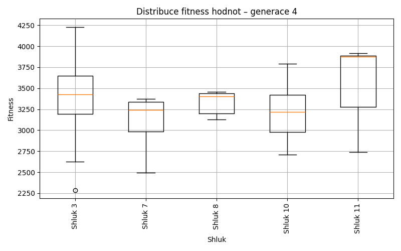
Generace 5
Stabilita mezi generací 4 → 5:
Shluk -1 → 3: 2 jedinců (6.5 %)
Shluk -1 → -1: 27 jedinců (87.1 %)
Shluk -1 → 8: 2 jedinců (6.5 %)
Shluk 3 → 3: 42 jedinců (89.4 %)
Shluk 3 → -1: 4 jedinců (8.5 %)
Shluk 3 → 8: 1 jedinců (2.1 %)
Shluk 10 → 3: 6 jedinců (100.0 %)
Shluk 7 → 7: 4 jedinců (100.0 %)
Shluk 8 → 8: 6 jedinců (100.0 %)
Shluk 11 → -1: 1 jedinců (16.7 %)
Shluk 11 → 11: 5 jedinců (83.3 %)
Jaccardovo mapování a overlap: Generace 4 → 5
- Shluk 3 → 3 (Jaccard: 0.76, Overlap: 0.89)
- Shluk 10 → 3 (Jaccard: 0.12, Overlap: 1.00)
- Shluk 7 → 7 (Jaccard: 1.00, Overlap: 1.00)
- Shluk 8 → 8 (Jaccard: 0.67, Overlap: 1.00)
- Shluk 11 → 11 (Jaccard: 0.83, Overlap: 1.00)
Posun centroidů mezi generací 4 → 5:
- Shluk 0: 122.7580
- Shluk 1: 1075.3752
- Shluk 2: 839.8166
- Shluk 3: 1011.3116
Generace 6
Stabilita mezi generací 5 → 6:
Shluk 3 → 3: 45 jedinců (90.0 %)
Shluk 3 → -1: 5 jedinců (10.0 %)
Shluk -1 → -1: 18 jedinců (56.2 %)
Shluk -1 → 7: 3 jedinců (9.4 %)
Shluk -1 → 3: 10 jedinců (31.2 %)
Shluk -1 → 8: 1 jedinců (3.1 %)
Shluk 7 → -1: 3 jedinců (75.0 %)
Shluk 7 → 7: 1 jedinců (25.0 %)
Shluk 8 → 8: 9 jedinců (100.0 %)
Shluk 11 → 11: 4 jedinců (80.0 %)
Shluk 11 → -1: 1 jedinců (20.0 %)
Jaccardovo mapování a overlap: Generace 5 → 6
- Shluk 3 → 3 (Jaccard: 0.75, Overlap: 0.90)
- Shluk 7 → 7 (Jaccard: 0.14, Overlap: 0.25)
- Shluk 8 → 8 (Jaccard: 0.90, Overlap: 1.00)
- Shluk 11 → 11 (Jaccard: 0.80, Overlap: 1.00)
Posun centroidů mezi generací 5 → 6:
- Shluk 0: 70.4320
- Shluk 1: 902.9909
- Shluk 2: 32.8545
- Shluk 3: 76.5999
Generace 7
Stabilita mezi generací 6 → 7:
Shluk 3 → 3: 42 jedinců (76.4 %)
Shluk 3 → -1: 13 jedinců (23.6 %)
Shluk -1 → -1: 20 jedinců (74.1 %)
Shluk -1 → 3: 7 jedinců (25.9 %)
Shluk 7 → -1: 1 jedinců (25.0 %)
Shluk 7 → 3: 3 jedinců (75.0 %)
Shluk 8 → 8: 7 jedinců (70.0 %)
Shluk 8 → -1: 3 jedinců (30.0 %)
Shluk 11 → 11: 4 jedinců (100.0 %)
Jaccardovo mapování a overlap: Generace 6 → 7
- Shluk 3 → 3 (Jaccard: 0.65, Overlap: 0.81)
- Shluk 7 → 3 (Jaccard: 0.06, Overlap: 0.75)
- Shluk 8 → 8 (Jaccard: 0.70, Overlap: 1.00)
- Shluk 11 → 11 (Jaccard: 1.00, Overlap: 1.00)
Posun centroidů mezi generací 6 → 7:
- Shluk 0: 122.0763
- Shluk 1: 1294.6850
- Shluk 2: 1012.3191
Generace 8
Stabilita mezi generací 7 → 8:
Shluk 3 → 3: 51 jedinců (98.1 %)
Shluk 3 → -1: 1 jedinců (1.9 %)
Shluk -1 → 3: 29 jedinců (78.4 %)
Shluk -1 → -1: 8 jedinců (21.6 %)
Shluk 8 → 3: 7 jedinců (100.0 %)
Shluk 11 → 3: 4 jedinců (100.0 %)
Jaccardovo mapování a overlap: Generace 7 → 8
- Shluk 3 → 3 (Jaccard: 0.55, Overlap: 0.98)
- Shluk 8 → 3 (Jaccard: 0.08, Overlap: 1.00)
- Shluk 11 → 3 (Jaccard: 0.04, Overlap: 1.00)
Posun centroidů mezi generací 7 → 8:
- Shluk 0: 207.3035
Generace 9
Stabilita mezi generací 8 → 9:
Shluk 3 → 12: 9 jedinců (9.9 %)
Shluk 3 → -1: 34 jedinců (37.4 %)
Shluk 3 → 3: 42 jedinců (46.2 %)
Shluk 3 → 13: 6 jedinců (6.6 %)
Shluk -1 → -1: 8 jedinců (88.9 %)
Shluk -1 → 12: 1 jedinců (11.1 %)
Jaccardovo mapování a overlap: Generace 8 → 9
- Shluk 3 → 3 (Jaccard: 0.46, Overlap: 1.00)
Posun centroidů mezi generací 8 → 9:
- Shluk 0: 525.9427
Generace 10
Stabilita mezi generací 9 → 10:
Shluk 12 → -1: 3 jedinců (30.0 %)
Shluk 12 → 12: 6 jedinců (60.0 %)
Shluk 12 → 13: 1 jedinců (10.0 %)
Shluk -1 → -1: 36 jedinců (85.7 %)
Shluk -1 → 3: 3 jedinců (7.1 %)
Shluk -1 → 14: 3 jedinců (7.1 %)
Shluk 3 → -1: 8 jedinců (19.0 %)
Shluk 3 → 3: 33 jedinců (78.6 %)
Shluk 3 → 14: 1 jedinců (2.4 %)
Shluk 13 → 13: 6 jedinců (100.0 %)
Jaccardovo mapování a overlap: Generace 9 → 10
- Shluk 12 → 12 (Jaccard: 0.60, Overlap: 1.00)
- Shluk 3 → 3 (Jaccard: 0.73, Overlap: 0.92)
- Shluk 13 → 13 (Jaccard: 0.86, Overlap: 1.00)
Posun centroidů mezi generací 9 → 10:
- Shluk 0: 744.8416
- Shluk 1: 853.4108
- Shluk 2: 724.2385
Generace 11
Stabilita mezi generací 10 → 11:
Shluk -1 → -1: 34 jedinců (72.3 %)
Shluk -1 → 3: 13 jedinců (27.7 %)
Shluk 3 → 12: 8 jedinců (22.2 %)
Shluk 3 → 3: 24 jedinců (66.7 %)
Shluk 3 → -1: 4 jedinců (11.1 %)
Shluk 13 → 3: 7 jedinců (100.0 %)
Shluk 12 → 12: 1 jedinců (16.7 %)
Shluk 12 → -1: 5 jedinců (83.3 %)
Shluk 14 → 3: 4 jedinců (100.0 %)
Jaccardovo mapování a overlap: Generace 10 → 11
- Shluk 3 → 3 (Jaccard: 0.40, Overlap: 0.67)
- Shluk 13 → 3 (Jaccard: 0.15, Overlap: 1.00)
- Shluk 12 → 12 (Jaccard: 0.07, Overlap: 0.17)
- Shluk 14 → 3 (Jaccard: 0.08, Overlap: 1.00)
Posun centroidů mezi generací 10 → 11:
- Shluk 0: 413.3856
- Shluk 1: 578.8591
Generace 12
Stabilita mezi generací 11 → 12:
Shluk -1 → 15: 5 jedinců (11.6 %)
Shluk -1 → -1: 33 jedinců (76.7 %)
Shluk -1 → 3: 5 jedinců (11.6 %)
Shluk 12 → 12: 5 jedinců (55.6 %)
Shluk 12 → -1: 3 jedinců (33.3 %)
Shluk 12 → 3: 1 jedinců (11.1 %)
Shluk 3 → 3: 44 jedinců (91.7 %)
Shluk 3 → -1: 2 jedinců (4.2 %)
Shluk 3 → 15: 2 jedinců (4.2 %)
Jaccardovo mapování a overlap: Generace 11 → 12
- Shluk 12 → 12 (Jaccard: 0.56, Overlap: 1.00)
- Shluk 3 → 3 (Jaccard: 0.81, Overlap: 0.92)
Posun centroidů mezi generací 11 → 12:
- Shluk 0: 939.9158
- Shluk 1: 70.6324
Generace 13
Stabilita mezi generací 12 → 13:
Shluk 15 → -1: 4 jedinců (57.1 %)
Shluk 15 → 3: 3 jedinců (42.9 %)
Shluk -1 → -1: 26 jedinců (68.4 %)
Shluk -1 → 3: 12 jedinců (31.6 %)
Shluk 3 → 3: 46 jedinců (92.0 %)
Shluk 3 → -1: 4 jedinců (8.0 %)
Shluk 12 → 3: 5 jedinců (100.0 %)
Jaccardovo mapování a overlap: Generace 12 → 13
- Shluk 15 → 3 (Jaccard: 0.04, Overlap: 0.43)
- Shluk 3 → 3 (Jaccard: 0.66, Overlap: 0.92)
- Shluk 12 → 3 (Jaccard: 0.08, Overlap: 1.00)
Posun centroidů mezi generací 12 → 13:
- Shluk 0: 784.0547
Generace 14
Stabilita mezi generací 13 → 14:
Shluk -1 → -1: 27 jedinců (79.4 %)
Shluk -1 → 3: 7 jedinců (20.6 %)
Shluk 3 → 3: 60 jedinců (90.9 %)
Shluk 3 → -1: 6 jedinců (9.1 %)
Jaccardovo mapování a overlap: Generace 13 → 14
- Shluk 3 → 3 (Jaccard: 0.82, Overlap: 0.91)
Posun centroidů mezi generací 13 → 14:
- Shluk 0: 74.0365
Generace 15
Stabilita mezi generací 14 → 15:
Shluk -1 → -1: 25 jedinců (75.8 %)
Shluk -1 → 16: 4 jedinců (12.1 %)
Shluk -1 → 3: 4 jedinců (12.1 %)
Shluk 3 → 3: 63 jedinců (94.0 %)
Shluk 3 → -1: 3 jedinců (4.5 %)
Shluk 3 → 16: 1 jedinců (1.5 %)
Jaccardovo mapování a overlap: Generace 14 → 15
- Shluk 3 → 3 (Jaccard: 0.89, Overlap: 0.94)
Posun centroidů mezi generací 14 → 15:
- Shluk 0: 76.9645
Generace 16
Stabilita mezi generací 15 → 16:
Shluk -1 → -1: 25 jedinců (89.3 %)
Shluk -1 → 3: 3 jedinců (10.7 %)
Shluk 3 → 3: 53 jedinců (79.1 %)
Shluk 3 → -1: 2 jedinců (3.0 %)
Shluk 3 → 17: 8 jedinců (11.9 %)
Shluk 3 → 18: 4 jedinců (6.0 %)
Shluk 16 → 16: 5 jedinců (100.0 %)
Jaccardovo mapování a overlap: Generace 15 → 16
- Shluk 3 → 3 (Jaccard: 0.76, Overlap: 0.95)
- Shluk 16 → 16 (Jaccard: 1.00, Overlap: 1.00)
Posun centroidů mezi generací 15 → 16:
- Shluk 0: 128.5413
- Shluk 1: 0.0000
Generace 17
Stabilita mezi generací 16 → 17:
Shluk -1 → 3: 3 jedinců (11.1 %)
Shluk -1 → -1: 19 jedinců (70.4 %)
Shluk -1 → 17: 5 jedinců (18.5 %)
Shluk 3 → -1: 14 jedinců (25.0 %)
Shluk 3 → 19: 4 jedinců (7.1 %)
Shluk 3 → 3: 36 jedinců (64.3 %)
Shluk 3 → 17: 2 jedinců (3.6 %)
Shluk 16 → 3: 2 jedinců (40.0 %)
Shluk 16 → -1: 3 jedinců (60.0 %)
Shluk 17 → 17: 7 jedinců (87.5 %)
Shluk 17 → 3: 1 jedinců (12.5 %)
Shluk 18 → 18: 4 jedinců (100.0 %)
Jaccardovo mapování a overlap: Generace 16 → 17
- Shluk 3 → 3 (Jaccard: 0.58, Overlap: 0.86)
- Shluk 16 → 3 (Jaccard: 0.04, Overlap: 0.40)
- Shluk 17 → 17 (Jaccard: 0.47, Overlap: 0.88)
- Shluk 18 → 18 (Jaccard: 1.00, Overlap: 1.00)
Posun centroidů mezi generací 16 → 17:
- Shluk 0: 286.9677
- Shluk 1: 1244.1626
- Shluk 2: 388.3656
- Shluk 3: 0.0000
Generace 18
Stabilita mezi generací 17 → 18:
Shluk 3 → 3: 40 jedinců (95.2 %)
Shluk 3 → -1: 1 jedinců (2.4 %)
Shluk 3 → 20: 1 jedinců (2.4 %)
Shluk -1 → -1: 29 jedinců (80.6 %)
Shluk -1 → 20: 1 jedinců (2.8 %)
Shluk -1 → 3: 6 jedinců (16.7 %)
Shluk 19 → 19: 4 jedinců (100.0 %)
Shluk 17 → 20: 4 jedinců (28.6 %)
Shluk 17 → -1: 4 jedinců (28.6 %)
Shluk 17 → 17: 6 jedinců (42.9 %)
Shluk 18 → 18: 4 jedinců (100.0 %)
Jaccardovo mapování a overlap: Generace 17 → 18
- Shluk 3 → 3 (Jaccard: 0.83, Overlap: 0.95)
- Shluk 19 → 19 (Jaccard: 1.00, Overlap: 1.00)
- Shluk 17 → 17 (Jaccard: 0.43, Overlap: 1.00)
- Shluk 18 → 18 (Jaccard: 1.00, Overlap: 1.00)
Posun centroidů mezi generací 17 → 18:
- Shluk 0: 78.4261
- Shluk 1: 1099.9327
- Shluk 2: 782.1794
- Shluk 3: 0.0000
Generace 19
Stabilita mezi generací 18 → 19:
Shluk 3 → 3: 46 jedinců (100.0 %)
Shluk -1 → 3: 21 jedinců (61.8 %)
Shluk -1 → -1: 13 jedinců (38.2 %)
Shluk 20 → 3: 6 jedinců (100.0 %)
Shluk 19 → 3: 4 jedinců (100.0 %)
Shluk 18 → 3: 4 jedinců (100.0 %)
Shluk 17 → 3: 5 jedinců (83.3 %)
Shluk 17 → -1: 1 jedinců (16.7 %)
Jaccardovo mapování a overlap: Generace 18 → 19
- Shluk 3 → 3 (Jaccard: 0.53, Overlap: 1.00)
- Shluk 20 → 3 (Jaccard: 0.07, Overlap: 1.00)
- Shluk 19 → 3 (Jaccard: 0.05, Overlap: 1.00)
- Shluk 18 → 3 (Jaccard: 0.05, Overlap: 1.00)
- Shluk 17 → 3 (Jaccard: 0.06, Overlap: 0.83)
Posun centroidů mezi generací 18 → 19:
- Shluk 0: 284.1844
Generace 20
Stabilita mezi generací 19 → 20:
Shluk 3 → 3: 80 jedinců (93.0 %)
Shluk 3 → -1: 6 jedinců (7.0 %)
Shluk -1 → -1: 12 jedinců (85.7 %)
Shluk -1 → 3: 2 jedinců (14.3 %)
Jaccardovo mapování a overlap: Generace 19 → 20
- Shluk 3 → 3 (Jaccard: 0.91, Overlap: 0.98)
Posun centroidů mezi generací 19 → 20:
- Shluk 0: 87.0496
Generace 21
Stabilita mezi generací 20 → 21:
Shluk 3 → 3: 56 jedinců (68.3 %)
Shluk 3 → -1: 15 jedinců (18.3 %)
Shluk 3 → 21: 11 jedinců (13.4 %)
Shluk -1 → -1: 17 jedinců (94.4 %)
Shluk -1 → 3: 1 jedinců (5.6 %)
Jaccardovo mapování a overlap: Generace 20 → 21
- Shluk 3 → 3 (Jaccard: 0.67, Overlap: 0.98)
Posun centroidů mezi generací 20 → 21:
- Shluk 0: 169.2390
Generace 22
Stabilita mezi generací 21 → 22:
Shluk 3 → 3: 56 jedinců (98.2 %)
Shluk 3 → -1: 1 jedinců (1.8 %)
Shluk -1 → -1: 22 jedinců (68.8 %)
Shluk -1 → 3: 10 jedinců (31.2 %)
Shluk 21 → 3: 11 jedinců (100.0 %)
Jaccardovo mapování a overlap: Generace 21 → 22
- Shluk 3 → 3 (Jaccard: 0.72, Overlap: 0.98)
- Shluk 21 → 3 (Jaccard: 0.14, Overlap: 1.00)
Posun centroidů mezi generací 21 → 22:
- Shluk 0: 139.8172

Generace 23
Stabilita mezi generací 22 → 23:
Shluk 3 → 3: 77 jedinců (100.0 %)
Shluk -1 → -1: 21 jedinců (91.3 %)
Shluk -1 → 3: 2 jedinců (8.7 %)
Jaccardovo mapování a overlap: Generace 22 → 23
- Shluk 3 → 3 (Jaccard: 0.97, Overlap: 1.00)
Posun centroidů mezi generací 22 → 23:
- Shluk 0: 35.0162
Generace 24
Stabilita mezi generací 23 → 24:
Shluk 3 → 3: 30 jedinců (38.0 %)
Shluk 3 → -1: 26 jedinců (32.9 %)
Shluk 3 → 22: 11 jedinců (13.9 %)
Shluk 3 → 23: 5 jedinců (6.3 %)
Shluk 3 → 24: 7 jedinců (8.9 %)
Shluk -1 → -1: 21 jedinců (100.0 %)
Jaccardovo mapování a overlap: Generace 23 → 24
- Shluk 3 → 3 (Jaccard: 0.38, Overlap: 1.00)
Posun centroidů mezi generací 23 → 24:
- Shluk 0: 323.9404
Generace 25
Stabilita mezi generací 24 → 25:
Shluk 3 → 3: 29 jedinců (96.7 %)
Shluk 3 → -1: 1 jedinců (3.3 %)
Shluk -1 → -1: 26 jedinců (55.3 %)
Shluk -1 → 3: 21 jedinců (44.7 %)
Shluk 22 → 3: 11 jedinců (100.0 %)
Shluk 23 → 3: 5 jedinců (100.0 %)
Shluk 24 → 3: 7 jedinců (100.0 %)
Jaccardovo mapování a overlap: Generace 24 → 25
- Shluk 3 → 3 (Jaccard: 0.39, Overlap: 0.97)
- Shluk 22 → 3 (Jaccard: 0.15, Overlap: 1.00)
- Shluk 23 → 3 (Jaccard: 0.07, Overlap: 1.00)
- Shluk 24 → 3 (Jaccard: 0.10, Overlap: 1.00)
Posun centroidů mezi generací 24 → 25:
- Shluk 0: 325.1106
Generace 26
Stabilita mezi generací 25 → 26:
Shluk 3 → 3: 59 jedinců (80.8 %)
Shluk 3 → 25: 4 jedinců (5.5 %)
Shluk 3 → 26: 5 jedinců (6.8 %)
Shluk 3 → -1: 5 jedinců (6.8 %)
Shluk -1 → -1: 24 jedinců (88.9 %)
Shluk -1 → 3: 2 jedinců (7.4 %)
Shluk -1 → 26: 1 jedinců (3.7 %)
Jaccardovo mapování a overlap: Generace 25 → 26
- Shluk 3 → 3 (Jaccard: 0.79, Overlap: 0.97)
Posun centroidů mezi generací 25 → 26:
- Shluk 0: 129.4546
Generace 27
Stabilita mezi generací 26 → 27:
Shluk 3 → 3: 60 jedinců (98.4 %)
Shluk 3 → -1: 1 jedinců (1.6 %)
Shluk -1 → -1: 27 jedinců (93.1 %)
Shluk -1 → 3: 2 jedinců (6.9 %)
Shluk 25 → 3: 4 jedinců (100.0 %)
Shluk 26 → 26: 6 jedinců (100.0 %)
Jaccardovo mapování a overlap: Generace 26 → 27
- Shluk 3 → 3 (Jaccard: 0.90, Overlap: 0.98)
- Shluk 25 → 3 (Jaccard: 0.06, Overlap: 1.00)
- Shluk 26 → 26 (Jaccard: 1.00, Overlap: 1.00)
Posun centroidů mezi generací 26 → 27:
- Shluk 0: 80.2874
- Shluk 1: 929.5034
Generace 28
Stabilita mezi generací 27 → 28:
Shluk 3 → 3: 65 jedinců (98.5 %)
Shluk 3 → -1: 1 jedinců (1.5 %)
Shluk -1 → -1: 23 jedinců (82.1 %)
Shluk -1 → 3: 5 jedinců (17.9 %)
Shluk 26 → 26: 6 jedinců (100.0 %)
Jaccardovo mapování a overlap: Generace 27 → 28
- Shluk 3 → 3 (Jaccard: 0.92, Overlap: 0.98)
- Shluk 26 → 26 (Jaccard: 1.00, Overlap: 1.00)
Posun centroidů mezi generací 27 → 28:
- Shluk 0: 45.6872
- Shluk 1: 0.0000
Generace 29
Stabilita mezi generací 28 → 29:
Shluk 3 → 3: 65 jedinců (92.9 %)
Shluk 3 → -1: 5 jedinců (7.1 %)
Shluk -1 → -1: 21 jedinců (87.5 %)
Shluk -1 → 3: 3 jedinců (12.5 %)
Shluk 26 → 26: 5 jedinců (83.3 %)
Shluk 26 → 3: 1 jedinců (16.7 %)
Jaccardovo mapování a overlap: Generace 28 → 29
- Shluk 3 → 3 (Jaccard: 0.88, Overlap: 0.94)
- Shluk 26 → 26 (Jaccard: 0.83, Overlap: 1.00)
Posun centroidů mezi generací 28 → 29:
- Shluk 0: 60.7697
- Shluk 1: 104.0263
Generace 30
Stabilita mezi generací 29 → 30:
Shluk 3 → 3: 66 jedinců (95.7 %)
Shluk 3 → -1: 3 jedinců (4.3 %)
Shluk -1 → -1: 23 jedinců (88.5 %)
Shluk -1 → 3: 3 jedinců (11.5 %)
Shluk 26 → 26: 5 jedinců (100.0 %)
Jaccardovo mapování a overlap: Generace 29 → 30
- Shluk 3 → 3 (Jaccard: 0.92, Overlap: 0.96)
- Shluk 26 → 26 (Jaccard: 1.00, Overlap: 1.00)
Posun centroidů mezi generací 29 → 30:
- Shluk 0: 49.8913
- Shluk 1: 0.0000
Generace 31
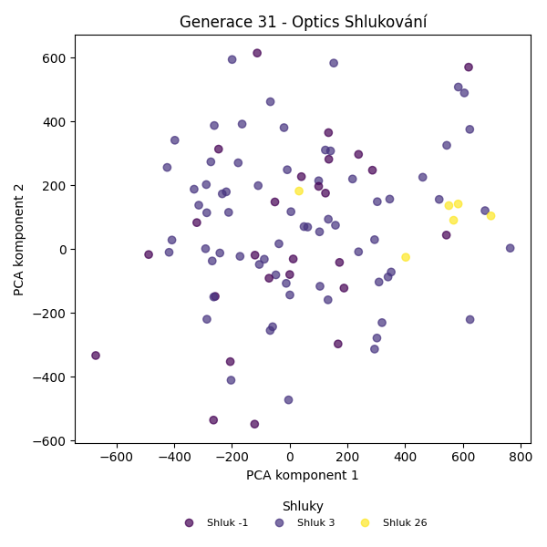
Stabilita mezi generací 30 → 31:
Shluk 3 → 3: 67 jedinců (97.1 %)
Shluk 3 → -1: 2 jedinců (2.9 %)
Shluk -1 → -1: 24 jedinců (92.3 %)
Shluk -1 → 3: 1 jedinců (3.8 %)
Shluk -1 → 26: 1 jedinců (3.8 %)
Shluk 26 → 26: 5 jedinců (100.0 %)
Jaccardovo mapování a overlap: Generace 30 → 31
- Shluk 3 → 3 (Jaccard: 0.96, Overlap: 0.99)
- Shluk 26 → 26 (Jaccard: 0.83, Overlap: 1.00)
Posun centroidů mezi generací 30 → 31:
- Shluk 0: 42.8255
- Shluk 1: 122.0878
Generace 32
Stabilita mezi generací 31 → 32:
Shluk 3 → 3: 64 jedinců (94.1 %)
Shluk 3 → -1: 4 jedinců (5.9 %)
Shluk -1 → -1: 24 jedinců (92.3 %)
Shluk -1 → 3: 2 jedinců (7.7 %)
Shluk 26 → -1: 6 jedinců (100.0 %)
Jaccardovo mapování a overlap: Generace 31 → 32
- Shluk 3 → 3 (Jaccard: 0.91, Overlap: 0.97)
- Shluk 26 → žádný vhodný přechod
Posun centroidů mezi generací 31 → 32:
- Shluk 0: 47.4500
Generace 33
Stabilita mezi generací 32 → 33:
Shluk 3 → 3: 64 jedinců (97.0 %)
Shluk 3 → -1: 2 jedinců (3.0 %)
Shluk -1 → -1: 29 jedinců (85.3 %)
Shluk -1 → 3: 5 jedinců (14.7 %)
Jaccardovo mapování a overlap: Generace 32 → 33
- Shluk 3 → 3 (Jaccard: 0.90, Overlap: 0.97)
Posun centroidů mezi generací 32 → 33:
- Shluk 0: 34.4048
Generace 34
Stabilita mezi generací 33 → 34:
Shluk 3 → 3: 69 jedinců (100.0 %)
Shluk -1 → -1: 27 jedinců (87.1 %)
Shluk -1 → 3: 4 jedinců (12.9 %)
Jaccardovo mapování a overlap: Generace 33 → 34
- Shluk 3 → 3 (Jaccard: 0.95, Overlap: 1.00)
Posun centroidů mezi generací 33 → 34:
- Shluk 0: 39.6847
Generace 35
Stabilita mezi generací 34 → 35:
Shluk 3 → 3: 73 jedinců (100.0 %)
Shluk -1 → -1: 24 jedinců (88.9 %)
Shluk -1 → 3: 3 jedinců (11.1 %)
Jaccardovo mapování a overlap: Generace 34 → 35
- Shluk 3 → 3 (Jaccard: 0.96, Overlap: 1.00)
Posun centroidů mezi generací 34 → 35:
- Shluk 0: 27.9097
Generace 36
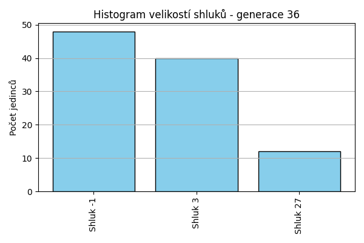
Stabilita mezi generací 35 → 36:
Shluk 3 → -1: 26 jedinců (34.2 %)
Shluk 3 → 3: 38 jedinců (50.0 %)
Shluk 3 → 27: 12 jedinců (15.8 %)
Shluk -1 → -1: 22 jedinců (91.7 %)
Shluk -1 → 3: 2 jedinců (8.3 %)
Jaccardovo mapování a overlap: Generace 35 → 36
- Shluk 3 → 3 (Jaccard: 0.49, Overlap: 0.95)
Posun centroidů mezi generací 35 → 36:
- Shluk 0: 261.7232
Generace 37
Stabilita mezi generací 36 → 37:
Shluk -1 → 3: 2 jedinců (4.2 %)
Shluk -1 → -1: 46 jedinců (95.8 %)
Shluk 3 → 3: 40 jedinců (100.0 %)
Shluk 27 → 3: 1 jedinců (8.3 %)
Shluk 27 → 27: 11 jedinců (91.7 %)
Jaccardovo mapování a overlap: Generace 36 → 37
- Shluk 3 → 3 (Jaccard: 0.93, Overlap: 1.00)
- Shluk 27 → 27 (Jaccard: 0.92, Overlap: 1.00)
Posun centroidů mezi generací 36 → 37:
- Shluk 0: 34.0611
- Shluk 1: 37.2636
Generace 38
Stabilita mezi generací 37 → 38:
Shluk 3 → 3: 42 jedinců (97.7 %)
Shluk 3 → -1: 1 jedinců (2.3 %)
Shluk -1 → -1: 44 jedinců (95.7 %)
Shluk -1 → 3: 2 jedinců (4.3 %)
Shluk 27 → 3: 1 jedinců (9.1 %)
Shluk 27 → 27: 10 jedinců (90.9 %)
Jaccardovo mapování a overlap: Generace 37 → 38
- Shluk 3 → 3 (Jaccard: 0.91, Overlap: 0.98)
- Shluk 27 → 27 (Jaccard: 0.91, Overlap: 1.00)
Posun centroidů mezi generací 37 → 38:
- Shluk 0: 50.2403
- Shluk 1: 55.8218
Generace 39
Stabilita mezi generací 38 → 39:
Shluk 3 → -1: 1 jedinců (2.2 %)
Shluk 3 → 3: 44 jedinců (97.8 %)
Shluk -1 → -1: 20 jedinců (44.4 %)
Shluk -1 → 28: 4 jedinců (8.9 %)
Shluk -1 → 3: 21 jedinců (46.7 %)
Shluk 27 → 3: 10 jedinců (100.0 %)
Jaccardovo mapování a overlap: Generace 38 → 39
- Shluk 3 → 3 (Jaccard: 0.58, Overlap: 0.98)
- Shluk 27 → 3 (Jaccard: 0.13, Overlap: 1.00)
Posun centroidů mezi generací 38 → 39:
- Shluk 0: 1049.3272
- Shluk 1: 628.8974
Generace 40
Stabilita mezi generací 39 → 40:
Shluk -1 → -1: 21 jedinců (100.0 %)
Shluk 28 → -1: 4 jedinců (100.0 %)
Shluk 3 → -1: 69 jedinců (92.0 %)
Shluk 3 → 3: 6 jedinců (8.0 %)
Jaccardovo mapování a overlap: Generace 39 → 40
- Shluk 28 → žádný vhodný přechod
- Shluk 3 → 3 (Jaccard: 0.08, Overlap: 1.00)
Posun centroidů mezi generací 39 → 40:
- Shluk 0: 1205.7658
Generace 41
Stabilita mezi generací 40 → 41:
Shluk -1 → -1: 94 jedinců (100.0 %)
Shluk 3 → 3: 6 jedinců (100.0 %)
Jaccardovo mapování a overlap: Generace 40 → 41
- Shluk 3 → 3 (Jaccard: 1.00, Overlap: 1.00)
Posun centroidů mezi generací 40 → 41:
- Shluk 0: 0.0000
Generace 42
Stabilita mezi generací 41 → 42:
Shluk -1 → -1: 49 jedinců (52.1 %)
Shluk -1 → 29: 45 jedinců (47.9 %)
Shluk 3 → 3: 6 jedinců (100.0 %)
Jaccardovo mapování a overlap: Generace 41 → 42
- Shluk 3 → 3 (Jaccard: 1.00, Overlap: 1.00)
Posun centroidů mezi generací 41 → 42:
- Shluk 0: 996.7543
Generace 43
Stabilita mezi generací 42 → 43:
Shluk -1 → -1: 44 jedinců (89.8 %)
Shluk -1 → 29: 5 jedinců (10.2 %)
Shluk 29 → 29: 41 jedinců (91.1 %)
Shluk 29 → -1: 4 jedinců (8.9 %)
Shluk 3 → 29: 1 jedinců (16.7 %)
Shluk 3 → 3: 4 jedinců (66.7 %)
Shluk 3 → -1: 1 jedinců (16.7 %)
Jaccardovo mapování a overlap: Generace 42 → 43
- Shluk 29 → 29 (Jaccard: 0.80, Overlap: 0.91)
- Shluk 3 → 3 (Jaccard: 0.67, Overlap: 1.00)
Posun centroidů mezi generací 42 → 43:
- Shluk 0: 93.9437
- Shluk 1: 169.1561
Generace 44
Stabilita mezi generací 43 → 44:
Shluk -1 → -1: 46 jedinců (93.9 %)
Shluk -1 → 29: 3 jedinců (6.1 %)
Shluk 29 → 29: 47 jedinců (100.0 %)
Shluk 3 → 3: 4 jedinců (100.0 %)
Jaccardovo mapování a overlap: Generace 43 → 44
- Shluk 29 → 29 (Jaccard: 0.94, Overlap: 1.00)
- Shluk 3 → 3 (Jaccard: 1.00, Overlap: 1.00)
Posun centroidů mezi generací 43 → 44:
- Shluk 0: 55.8568
- Shluk 1: 0.0000
Generace 45
Stabilita mezi generací 44 → 45:
Shluk -1 → -1: 46 jedinců (100.0 %)
Shluk 29 → 29: 49 jedinců (98.0 %)
Shluk 29 → -1: 1 jedinců (2.0 %)
Shluk 3 → -1: 2 jedinců (50.0 %)
Shluk 3 → 29: 2 jedinců (50.0 %)
Jaccardovo mapování a overlap: Generace 44 → 45
- Shluk 29 → 29 (Jaccard: 0.94, Overlap: 0.98)
- Shluk 3 → 29 (Jaccard: 0.04, Overlap: 0.50)
Posun centroidů mezi generací 44 → 45:
- Shluk 0: 25.1676
Generace 46
Stabilita mezi generací 45 → 46:
Shluk -1 → -1: 23 jedinců (46.9 %)
Shluk -1 → 29: 26 jedinců (53.1 %)
Shluk 29 → 29: 51 jedinců (100.0 %)
Jaccardovo mapování a overlap: Generace 45 → 46
- Shluk 29 → 29 (Jaccard: 0.66, Overlap: 1.00)
Posun centroidů mezi generací 45 → 46:
- Shluk 0: 140.9225
Generace 47
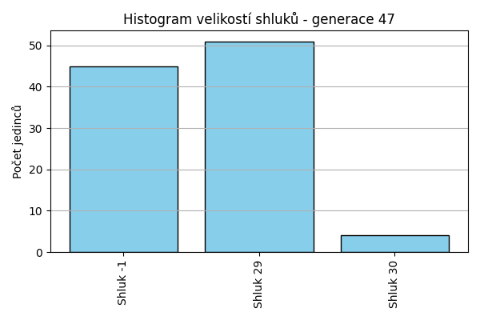
Stabilita mezi generací 46 → 47:
Shluk -1 → -1: 22 jedinců (95.7 %)
Shluk -1 → 30: 1 jedinců (4.3 %)
Shluk 29 → 29: 51 jedinců (66.2 %)
Shluk 29 → -1: 23 jedinců (29.9 %)
Shluk 29 → 30: 3 jedinců (3.9 %)
Jaccardovo mapování a overlap: Generace 46 → 47
- Shluk 29 → 29 (Jaccard: 0.66, Overlap: 1.00)
Posun centroidů mezi generací 46 → 47:
- Shluk 0: 141.1382

Generace 48

Stabilita mezi generací 47 → 48:
Shluk -1 → -1: 39 jedinců (86.7 %)
Shluk -1 → 29: 6 jedinců (13.3 %)
Shluk 29 → 29: 50 jedinců (98.0 %)
Shluk 29 → -1: 1 jedinců (2.0 %)
Shluk 30 → -1: 4 jedinců (100.0 %)
Jaccardovo mapování a overlap: Generace 47 → 48
- Shluk 29 → 29 (Jaccard: 0.88, Overlap: 0.98)
- Shluk 30 → žádný vhodný přechod
Posun centroidů mezi generací 47 → 48:
- Shluk 0: 25.0479
Generace 49
Stabilita mezi generací 48 → 49:
Shluk -1 → -1: 42 jedinců (95.5 %)
Shluk -1 → 29: 2 jedinců (4.5 %)
Shluk 29 → 29: 55 jedinců (98.2 %)
Shluk 29 → -1: 1 jedinců (1.8 %)
Jaccardovo mapování a overlap: Generace 48 → 49
- Shluk 29 → 29 (Jaccard: 0.95, Overlap: 0.98)
Posun centroidů mezi generací 48 → 49:
- Shluk 0: 11.4407
Generace 50
Stabilita mezi generací 49 → 50:
Shluk -1 → -1: 38 jedinců (88.4 %)
Shluk -1 → 29: 5 jedinců (11.6 %)
Shluk 29 → 29: 57 jedinců (100.0 %)
Jaccardovo mapování a overlap: Generace 49 → 50
- Shluk 29 → 29 (Jaccard: 0.92, Overlap: 1.00)
Posun centroidů mezi generací 49 → 50:
- Shluk 0: 42.0414
Generace 51
Stabilita mezi generací 50 → 51:
Shluk -1 → -1: 35 jedinců (92.1 %)
Shluk -1 → 29: 3 jedinců (7.9 %)
Shluk 29 → 29: 58 jedinců (93.5 %)
Shluk 29 → -1: 4 jedinců (6.5 %)
Jaccardovo mapování a overlap: Generace 50 → 51
- Shluk 29 → 29 (Jaccard: 0.89, Overlap: 0.95)
Posun centroidů mezi generací 50 → 51:
- Shluk 0: 52.2535
Generace 52
Stabilita mezi generací 51 → 52:
Shluk -1 → -1: 34 jedinců (87.2 %)
Shluk -1 → 31: 3 jedinců (7.7 %)
Shluk -1 → 29: 2 jedinců (5.1 %)
Shluk 29 → 29: 29 jedinců (47.5 %)
Shluk 29 → -1: 15 jedinců (24.6 %)
Shluk 29 → 31: 1 jedinců (1.6 %)
Shluk 29 → 32: 12 jedinců (19.7 %)
Shluk 29 → 33: 4 jedinců (6.6 %)
Jaccardovo mapování a overlap: Generace 51 → 52
- Shluk 29 → 29 (Jaccard: 0.46, Overlap: 0.94)
Posun centroidů mezi generací 51 → 52:
- Shluk 0: 250.6007
Generace 53
Stabilita mezi generací 52 → 53:
Shluk -1 → -1: 49 jedinců (100.0 %)
Shluk 29 → 29: 31 jedinců (100.0 %)
Shluk 31 → 31: 4 jedinců (100.0 %)
Shluk 32 → 32: 12 jedinců (100.0 %)
Shluk 33 → 33: 4 jedinců (100.0 %)
Jaccardovo mapování a overlap: Generace 52 → 53
- Shluk 29 → 29 (Jaccard: 1.00, Overlap: 1.00)
- Shluk 31 → 31 (Jaccard: 1.00, Overlap: 1.00)
- Shluk 32 → 32 (Jaccard: 1.00, Overlap: 1.00)
- Shluk 33 → 33 (Jaccard: 1.00, Overlap: 1.00)
Posun centroidů mezi generací 52 → 53:
- Shluk 0: 27.5970
- Shluk 1: 0.0000
- Shluk 2: 0.0000
- Shluk 3: 0.0000
Generace 54
Stabilita mezi generací 53 → 54:
Shluk -1 → -1: 49 jedinců (100.0 %)
Shluk 29 → -1: 30 jedinců (96.8 %)
Shluk 29 → 31: 1 jedinců (3.2 %)
Shluk 31 → 31: 4 jedinců (100.0 %)
Shluk 32 → -1: 12 jedinců (100.0 %)
Shluk 33 → -1: 4 jedinců (100.0 %)
Jaccardovo mapování a overlap: Generace 53 → 54
- Shluk 29 → 31 (Jaccard: 0.03, Overlap: 0.20)
- Shluk 31 → 31 (Jaccard: 0.80, Overlap: 1.00)
- Shluk 32 → žádný vhodný přechod
- Shluk 33 → žádný vhodný přechod
Posun centroidů mezi generací 53 → 54:
- Shluk 0: 855.2783
Generace 55
Stabilita mezi generací 54 → 55:
Shluk -1 → -1: 95 jedinců (100.0 %)
Shluk 31 → 31: 5 jedinců (100.0 %)
Jaccardovo mapování a overlap: Generace 54 → 55
- Shluk 31 → 31 (Jaccard: 1.00, Overlap: 1.00)
Posun centroidů mezi generací 54 → 55:
- Shluk 0: 0.0000
Generace 56
Stabilita mezi generací 55 → 56:
Shluk -1 → 34: 12 jedinců (12.6 %)
Shluk -1 → 35: 6 jedinců (6.3 %)
Shluk -1 → -1: 48 jedinců (50.5 %)
Shluk -1 → 36: 5 jedinců (5.3 %)
Shluk -1 → 37: 8 jedinců (8.4 %)
Shluk -1 → 38: 7 jedinců (7.4 %)
Shluk -1 → 39: 5 jedinců (5.3 %)
Shluk -1 → 40: 4 jedinců (4.2 %)
Shluk 31 → 31: 5 jedinců (100.0 %)
Jaccardovo mapování a overlap: Generace 55 → 56
- Shluk 31 → 31 (Jaccard: 1.00, Overlap: 1.00)
Posun centroidů mezi generací 55 → 56:
- Shluk 0: 662.8554
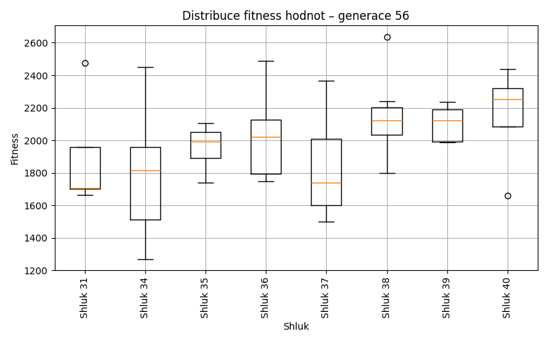
Generace 57
Stabilita mezi generací 56 → 57:
Shluk 34 → 34: 9 jedinců (75.0 %)
Shluk 34 → 40: 1 jedinců (8.3 %)
Shluk 34 → -1: 2 jedinců (16.7 %)
Shluk 35 → 35: 6 jedinců (100.0 %)
Shluk -1 → -1: 42 jedinců (87.5 %)
Shluk -1 → 37: 3 jedinců (6.2 %)
Shluk -1 → 40: 3 jedinců (6.2 %)
Shluk 36 → 36: 5 jedinců (100.0 %)
Shluk 31 → 31: 5 jedinců (100.0 %)
Shluk 37 → 37: 7 jedinců (87.5 %)
Shluk 37 → -1: 1 jedinců (12.5 %)
Shluk 38 → 38: 7 jedinců (100.0 %)
Shluk 39 → 39: 5 jedinců (100.0 %)
Shluk 40 → 40: 4 jedinců (100.0 %)
Jaccardovo mapování a overlap: Generace 56 → 57
- Shluk 34 → 34 (Jaccard: 0.75, Overlap: 1.00)
- Shluk 35 → 35 (Jaccard: 1.00, Overlap: 1.00)
- Shluk 36 → 36 (Jaccard: 1.00, Overlap: 1.00)
- Shluk 31 → 31 (Jaccard: 1.00, Overlap: 1.00)
- Shluk 37 → 37 (Jaccard: 0.64, Overlap: 0.88)
- Shluk 38 → 38 (Jaccard: 1.00, Overlap: 1.00)
- Shluk 39 → 39 (Jaccard: 1.00, Overlap: 1.00)
- Shluk 40 → 40 (Jaccard: 0.50, Overlap: 1.00)
Posun centroidů mezi generací 56 → 57:
- Shluk 0: 45.5270
- Shluk 1: 0.0000
- Shluk 2: 0.0000
- Shluk 3: 855.3862
- Shluk 4: 861.0472
- Shluk 5: 0.0000
- Shluk 6: 0.0000
- Shluk 7: 177.7581
Generace 58
Stabilita mezi generací 57 → 58:
Shluk 34 → 34: 9 jedinců (100.0 %)
Shluk 35 → 35: 6 jedinců (100.0 %)
Shluk -1 → -1: 40 jedinců (88.9 %)
Shluk -1 → 40: 1 jedinců (2.2 %)
Shluk -1 → 34: 1 jedinců (2.2 %)
Shluk -1 → 35: 3 jedinců (6.7 %)
Shluk 36 → 35: 4 jedinců (80.0 %)
Shluk 36 → -1: 1 jedinců (20.0 %)
Shluk 31 → 31: 5 jedinců (100.0 %)
Shluk 37 → 37: 10 jedinců (100.0 %)
Shluk 38 → -1: 6 jedinců (85.7 %)
Shluk 38 → 34: 1 jedinců (14.3 %)
Shluk 39 → 39: 5 jedinců (100.0 %)
Shluk 40 → 40: 8 jedinců (100.0 %)
Jaccardovo mapování a overlap: Generace 57 → 58
- Shluk 34 → 34 (Jaccard: 0.82, Overlap: 1.00)
- Shluk 35 → 35 (Jaccard: 0.46, Overlap: 1.00)
- Shluk 36 → 35 (Jaccard: 0.29, Overlap: 0.80)
- Shluk 31 → 31 (Jaccard: 1.00, Overlap: 1.00)
- Shluk 37 → 37 (Jaccard: 1.00, Overlap: 1.00)
- Shluk 38 → 34 (Jaccard: 0.06, Overlap: 0.14)
- Shluk 39 → 39 (Jaccard: 1.00, Overlap: 1.00)
- Shluk 40 → 40 (Jaccard: 0.89, Overlap: 1.00)
Posun centroidů mezi generací 57 → 58:
- Shluk 0: 90.5714
- Shluk 1: 247.3706
- Shluk 2: 650.3467
- Shluk 3: 855.3862
- Shluk 4: 1138.4593
- Shluk 5: 1051.4972
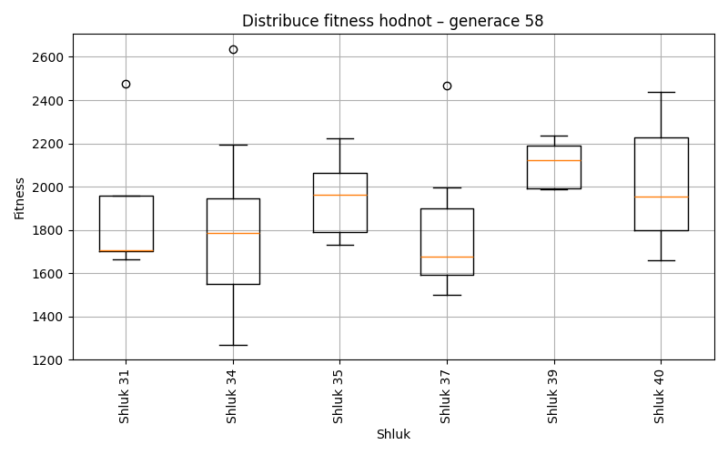
Generace 59
Stabilita mezi generací 58 → 59:
Shluk 34 → -1: 11 jedinců (100.0 %)
Shluk 35 → -1: 13 jedinců (100.0 %)
Shluk -1 → -1: 47 jedinců (100.0 %)
Shluk 40 → -1: 9 jedinců (100.0 %)
Shluk 31 → 31: 5 jedinců (100.0 %)
Shluk 37 → -1: 10 jedinců (100.0 %)
Shluk 39 → -1: 5 jedinců (100.0 %)
Jaccardovo mapování a overlap: Generace 58 → 59
- Shluk 34 → žádný vhodný přechod
- Shluk 35 → žádný vhodný přechod
- Shluk 40 → žádný vhodný přechod
- Shluk 31 → 31 (Jaccard: 1.00, Overlap: 1.00)
- Shluk 37 → žádný vhodný přechod
- Shluk 39 → žádný vhodný přechod
Posun centroidů mezi generací 58 → 59:
- Shluk 0: 716.2304
Generace 60
Stabilita mezi generací 59 → 60:
Shluk -1 → -1: 95 jedinců (100.0 %)
Shluk 31 → 31: 4 jedinců (80.0 %)
Shluk 31 → -1: 1 jedinců (20.0 %)
Jaccardovo mapování a overlap: Generace 59 → 60
- Shluk 31 → 31 (Jaccard: 0.80, Overlap: 1.00)
Posun centroidů mezi generací 59 → 60:
- Shluk 0: 74.2898
Generace 61
Stabilita mezi generací 60 → 61:
Shluk -1 → -1: 96 jedinců (100.0 %)
Shluk 31 → 31: 4 jedinců (100.0 %)
Jaccardovo mapování a overlap: Generace 60 → 61
- Shluk 31 → 31 (Jaccard: 1.00, Overlap: 1.00)
Posun centroidů mezi generací 60 → 61:
- Shluk 0: 0.0000
Generace 62
Stabilita mezi generací 61 → 62:
Shluk -1 → 31: 51 jedinců (53.1 %)
Shluk -1 → -1: 41 jedinců (42.7 %)
Shluk -1 → 41: 4 jedinců (4.2 %)
Shluk 31 → 31: 4 jedinců (100.0 %)
Jaccardovo mapování a overlap: Generace 61 → 62
- Shluk 31 → 31 (Jaccard: 0.07, Overlap: 1.00)
Posun centroidů mezi generací 61 → 62:
- Shluk 0: 683.3882
Generace 63
Stabilita mezi generací 62 → 63:
Shluk 31 → 31: 53 jedinců (96.4 %)
Shluk 31 → 42: 1 jedinců (1.8 %)
Shluk 31 → -1: 1 jedinců (1.8 %)
Shluk -1 → 31: 5 jedinců (12.2 %)
Shluk -1 → -1: 32 jedinců (78.0 %)
Shluk -1 → 42: 3 jedinců (7.3 %)
Shluk -1 → 41: 1 jedinců (2.4 %)
Shluk 41 → 41: 4 jedinců (100.0 %)
Jaccardovo mapování a overlap: Generace 62 → 63
- Shluk 31 → 31 (Jaccard: 0.88, Overlap: 0.96)
- Shluk 41 → 41 (Jaccard: 0.80, Overlap: 1.00)
Posun centroidů mezi generací 62 → 63:
- Shluk 0: 33.4869
- Shluk 1: 1135.7924
Generace 64
Stabilita mezi generací 63 → 64:
Shluk 31 → 31: 54 jedinců (93.1 %)
Shluk 31 → 42: 1 jedinců (1.7 %)
Shluk 31 → 41: 1 jedinců (1.7 %)
Shluk 31 → -1: 2 jedinců (3.4 %)
Shluk -1 → -1: 33 jedinců (100.0 %)
Shluk 42 → 42: 4 jedinců (100.0 %)
Shluk 41 → 41: 4 jedinců (80.0 %)
Shluk 41 → 31: 1 jedinců (20.0 %)
Jaccardovo mapování a overlap: Generace 63 → 64
- Shluk 31 → 31 (Jaccard: 0.92, Overlap: 0.98)
- Shluk 42 → 42 (Jaccard: 0.80, Overlap: 1.00)
- Shluk 41 → 41 (Jaccard: 0.67, Overlap: 0.80)
Posun centroidů mezi generací 63 → 64:
- Shluk 0: 21.6514
- Shluk 1: 66.7222
- Shluk 2: 111.5111
Generace 65

Stabilita mezi generací 64 → 65:
Shluk 31 → 31: 53 jedinců (96.4 %)
Shluk 31 → -1: 1 jedinců (1.8 %)
Shluk 31 → 42: 1 jedinců (1.8 %)
Shluk -1 → -1: 34 jedinců (97.1 %)
Shluk -1 → 31: 1 jedinců (2.9 %)
Shluk 42 → 31: 2 jedinců (40.0 %)
Shluk 42 → 42: 3 jedinců (60.0 %)
Shluk 41 → 41: 5 jedinců (100.0 %)
Jaccardovo mapování a overlap: Generace 64 → 65
- Shluk 31 → 31 (Jaccard: 0.91, Overlap: 0.96)
- Shluk 42 → 42 (Jaccard: 0.50, Overlap: 0.75)
- Shluk 41 → 41 (Jaccard: 1.00, Overlap: 1.00)
Posun centroidů mezi generací 64 → 65:
- Shluk 0: 30.3334
- Shluk 1: 68.9392
- Shluk 2: 0.0000
Generace 66
Stabilita mezi generací 65 → 66:
Shluk 31 → 31: 54 jedinců (96.4 %)
Shluk 31 → -1: 2 jedinců (3.6 %)
Shluk -1 → -1: 33 jedinců (94.3 %)
Shluk -1 → 31: 1 jedinců (2.9 %)
Shluk -1 → 42: 1 jedinců (2.9 %)
Shluk 42 → 42: 4 jedinců (100.0 %)
Shluk 41 → -1: 4 jedinců (80.0 %)
Shluk 41 → 31: 1 jedinců (20.0 %)
Jaccardovo mapování a overlap: Generace 65 → 66
- Shluk 31 → 31 (Jaccard: 0.93, Overlap: 0.96)
- Shluk 42 → 42 (Jaccard: 0.80, Overlap: 1.00)
- Shluk 41 → 31 (Jaccard: 0.02, Overlap: 0.20)
Posun centroidů mezi generací 65 → 66:
- Shluk 0: 56.8272
- Shluk 1: 95.0381
Generace 67
Stabilita mezi generací 66 → 67:
Shluk 31 → 31: 56 jedinců (100.0 %)
Shluk -1 → -1: 39 jedinců (100.0 %)
Shluk 42 → 42: 5 jedinců (100.0 %)
Jaccardovo mapování a overlap: Generace 66 → 67
- Shluk 31 → 31 (Jaccard: 1.00, Overlap: 1.00)
- Shluk 42 → 42 (Jaccard: 1.00, Overlap: 1.00)
Posun centroidů mezi generací 66 → 67:
- Shluk 0: 0.0000
- Shluk 1: 0.0000
Generace 68
Stabilita mezi generací 67 → 68:
Shluk 31 → 31: 56 jedinců (100.0 %)
Shluk -1 → -1: 33 jedinců (84.6 %)
Shluk -1 → 31: 6 jedinců (15.4 %)
Shluk 42 → 42: 5 jedinců (100.0 %)
Jaccardovo mapování a overlap: Generace 67 → 68
- Shluk 31 → 31 (Jaccard: 0.90, Overlap: 1.00)
- Shluk 42 → 42 (Jaccard: 1.00, Overlap: 1.00)
Posun centroidů mezi generací 67 → 68:
- Shluk 0: 43.6379
- Shluk 1: 0.0000
Generace 69
Stabilita mezi generací 68 → 69:
Shluk 31 → 31: 60 jedinců (96.8 %)
Shluk 31 → -1: 2 jedinců (3.2 %)
Shluk -1 → 42: 2 jedinců (6.1 %)
Shluk -1 → -1: 31 jedinců (93.9 %)
Shluk 42 → 42: 5 jedinců (100.0 %)
Jaccardovo mapování a overlap: Generace 68 → 69
- Shluk 31 → 31 (Jaccard: 0.97, Overlap: 1.00)
- Shluk 42 → 42 (Jaccard: 0.71, Overlap: 1.00)
Posun centroidů mezi generací 68 → 69:
- Shluk 0: 20.8513
- Shluk 1: 57.3200
Generace 70
Stabilita mezi generací 69 → 70:
Shluk 31 → -1: 54 jedinců (90.0 %)
Shluk 31 → 31: 6 jedinců (10.0 %)
Shluk 42 → 42: 7 jedinců (100.0 %)
Shluk -1 → -1: 32 jedinců (97.0 %)
Shluk -1 → 42: 1 jedinců (3.0 %)
Jaccardovo mapování a overlap: Generace 69 → 70
- Shluk 31 → 31 (Jaccard: 0.10, Overlap: 1.00)
- Shluk 42 → 42 (Jaccard: 0.88, Overlap: 1.00)
Posun centroidů mezi generací 69 → 70:
- Shluk 0: 669.9612
- Shluk 1: 52.5223
Generace 71
Stabilita mezi generací 70 → 71:
Shluk -1 → 42: 55 jedinců (64.0 %)
Shluk -1 → -1: 31 jedinců (36.0 %)
Shluk 42 → 42: 8 jedinců (100.0 %)
Shluk 31 → 42: 6 jedinců (100.0 %)
Jaccardovo mapování a overlap: Generace 70 → 71
- Shluk 42 → 42 (Jaccard: 0.12, Overlap: 1.00)
- Shluk 31 → 42 (Jaccard: 0.09, Overlap: 1.00)
Posun centroidů mezi generací 70 → 71:
- Shluk 0: 693.6425
Generace 72

Stabilita mezi generací 71 → 72:
Shluk 42 → 42: 69 jedinců (100.0 %)
Shluk -1 → -1: 26 jedinců (83.9 %)
Shluk -1 → 42: 5 jedinců (16.1 %)
Jaccardovo mapování a overlap: Generace 71 → 72
- Shluk 42 → 42 (Jaccard: 0.93, Overlap: 1.00)
Posun centroidů mezi generací 71 → 72:
- Shluk 0: 39.3253
Generace 73
Stabilita mezi generací 72 → 73:
Shluk 42 → 42: 73 jedinců (98.6 %)
Shluk 42 → -1: 1 jedinců (1.4 %)
Shluk -1 → -1: 25 jedinců (96.2 %)
Shluk -1 → 42: 1 jedinců (3.8 %)
Jaccardovo mapování a overlap: Generace 72 → 73
- Shluk 42 → 42 (Jaccard: 0.97, Overlap: 0.99)
Posun centroidů mezi generací 72 → 73:
- Shluk 0: 26.4585
Generace 74
Stabilita mezi generací 73 → 74:
Shluk 42 → 42: 74 jedinců (100.0 %)
Shluk -1 → -1: 25 jedinců (96.2 %)
Shluk -1 → 42: 1 jedinců (3.8 %)
Jaccardovo mapování a overlap: Generace 73 → 74
- Shluk 42 → 42 (Jaccard: 0.99, Overlap: 1.00)
Posun centroidů mezi generací 73 → 74:
- Shluk 0: 7.3627
Generace 75
Stabilita mezi generací 74 → 75:
Shluk 42 → 42: 70 jedinců (93.3 %)
Shluk 42 → -1: 5 jedinců (6.7 %)
Shluk -1 → -1: 23 jedinců (92.0 %)
Shluk -1 → 42: 2 jedinců (8.0 %)
Jaccardovo mapování a overlap: Generace 74 → 75
- Shluk 42 → 42 (Jaccard: 0.91, Overlap: 0.97)
Posun centroidů mezi generací 74 → 75:
- Shluk 0: 39.7931
Generace 76
Stabilita mezi generací 75 → 76:
Shluk 42 → 42: 72 jedinců (100.0 %)
Shluk -1 → -1: 27 jedinců (96.4 %)
Shluk -1 → 42: 1 jedinců (3.6 %)
Jaccardovo mapování a overlap: Generace 75 → 76
- Shluk 42 → 42 (Jaccard: 0.99, Overlap: 1.00)
Posun centroidů mezi generací 75 → 76:
- Shluk 0: 15.4564

Generace 77
Stabilita mezi generací 76 → 77:
Shluk 42 → 42: 63 jedinců (86.3 %)
Shluk 42 → 43: 5 jedinců (6.8 %)
Shluk 42 → -1: 5 jedinců (6.8 %)
Shluk -1 → -1: 23 jedinců (85.2 %)
Shluk -1 → 42: 4 jedinců (14.8 %)
Jaccardovo mapování a overlap: Generace 76 → 77
- Shluk 42 → 42 (Jaccard: 0.82, Overlap: 0.94)
Posun centroidů mezi generací 76 → 77:
- Shluk 0: 115.5524
Generace 78

Stabilita mezi generací 77 → 78:
Shluk 42 → 42: 4 jedinců (6.0 %)
Shluk 42 → -1: 63 jedinců (94.0 %)
Shluk 43 → 43: 5 jedinců (100.0 %)
Shluk -1 → -1: 28 jedinců (100.0 %)
Jaccardovo mapování a overlap: Generace 77 → 78
- Shluk 42 → 42 (Jaccard: 0.06, Overlap: 1.00)
- Shluk 43 → 43 (Jaccard: 1.00, Overlap: 1.00)
Posun centroidů mezi generací 77 → 78:
- Shluk 0: 603.1861
- Shluk 1: 0.0000
Generace 79
Stabilita mezi generací 78 → 79:
Shluk 42 → 42: 4 jedinců (100.0 %)
Shluk -1 → -1: 91 jedinců (100.0 %)
Shluk 43 → -1: 5 jedinců (100.0 %)
Jaccardovo mapování a overlap: Generace 78 → 79
- Shluk 42 → 42 (Jaccard: 1.00, Overlap: 1.00)
- Shluk 43 → žádný vhodný přechod
Posun centroidů mezi generací 78 → 79:
- Shluk 0: 0.0000
Generace 80
Stabilita mezi generací 79 → 80:
Shluk 42 → 42: 3 jedinců (75.0 %)
Shluk 42 → -1: 1 jedinců (25.0 %)
Shluk -1 → 42: 72 jedinců (75.0 %)
Shluk -1 → -1: 24 jedinců (25.0 %)
Jaccardovo mapování a overlap: Generace 79 → 80
- Shluk 42 → 42 (Jaccard: 0.04, Overlap: 0.75)
Posun centroidů mezi generací 79 → 80:
- Shluk 0: 562.1248
Generace 81
Stabilita mezi generací 80 → 81:
Shluk 42 → 42: 73 jedinců (97.3 %)
Shluk 42 → -1: 2 jedinců (2.7 %)
Shluk -1 → -1: 25 jedinců (100.0 %)
Jaccardovo mapování a overlap: Generace 80 → 81
- Shluk 42 → 42 (Jaccard: 0.97, Overlap: 1.00)
Posun centroidů mezi generací 80 → 81:
- Shluk 0: 41.2044
Generace 82
Stabilita mezi generací 81 → 82:
Shluk 42 → 42: 73 jedinců (100.0 %)
Shluk -1 → -1: 27 jedinců (100.0 %)
Jaccardovo mapování a overlap: Generace 81 → 82
- Shluk 42 → 42 (Jaccard: 1.00, Overlap: 1.00)
Posun centroidů mezi generací 81 → 82:
- Shluk 0: 4.3346
Generace 83
Stabilita mezi generací 82 → 83:
Shluk 42 → -1: 67 jedinců (91.8 %)
Shluk 42 → 42: 6 jedinců (8.2 %)
Shluk -1 → -1: 27 jedinců (100.0 %)
Jaccardovo mapování a overlap: Generace 82 → 83
- Shluk 42 → 42 (Jaccard: 0.08, Overlap: 1.00)
Posun centroidů mezi generací 82 → 83:
- Shluk 0: 329.2734
Generace 84
Stabilita mezi generací 83 → 84:
Shluk -1 → 42: 57 jedinců (60.6 %)
Shluk -1 → -1: 33 jedinců (35.1 %)
Shluk -1 → 44: 4 jedinců (4.3 %)
Shluk 42 → 42: 6 jedinců (100.0 %)
Jaccardovo mapování a overlap: Generace 83 → 84
- Shluk 42 → 42 (Jaccard: 0.10, Overlap: 1.00)
Posun centroidů mezi generací 83 → 84:
- Shluk 0: 298.1619
Generace 85
Stabilita mezi generací 84 → 85:
Shluk 42 → 42: 63 jedinců (100.0 %)
Shluk -1 → -1: 32 jedinců (97.0 %)
Shluk -1 → 42: 1 jedinců (3.0 %)
Shluk 44 → 44: 4 jedinců (100.0 %)
Jaccardovo mapování a overlap: Generace 84 → 85
- Shluk 42 → 42 (Jaccard: 0.98, Overlap: 1.00)
- Shluk 44 → 44 (Jaccard: 1.00, Overlap: 1.00)
Posun centroidů mezi generací 84 → 85:
- Shluk 0: 22.4731
- Shluk 1: 0.0000
Generace 86
Stabilita mezi generací 85 → 86:
Shluk 42 → 42: 64 jedinců (100.0 %)
Shluk -1 → -1: 32 jedinců (100.0 %)
Shluk 44 → 44: 4 jedinců (100.0 %)
Jaccardovo mapování a overlap: Generace 85 → 86
- Shluk 42 → 42 (Jaccard: 1.00, Overlap: 1.00)
- Shluk 44 → 44 (Jaccard: 1.00, Overlap: 1.00)
Posun centroidů mezi generací 85 → 86:
- Shluk 0: 26.9332
- Shluk 1: 0.0000
Generace 87

Stabilita mezi generací 86 → 87:
Shluk 42 → 42: 56 jedinců (87.5 %)
Shluk 42 → -1: 8 jedinců (12.5 %)
Shluk -1 → -1: 29 jedinců (90.6 %)
Shluk -1 → 42: 3 jedinců (9.4 %)
Shluk 44 → -1: 4 jedinců (100.0 %)
Jaccardovo mapování a overlap: Generace 86 → 87
- Shluk 42 → 42 (Jaccard: 0.84, Overlap: 0.95)
- Shluk 44 → žádný vhodný přechod
Posun centroidů mezi generací 86 → 87:
- Shluk 0: 41.4090
Generace 88
Stabilita mezi generací 87 → 88:
Shluk 42 → 42: 50 jedinců (84.7 %)
Shluk 42 → -1: 6 jedinců (10.2 %)
Shluk 42 → 45: 3 jedinců (5.1 %)
Shluk -1 → -1: 37 jedinců (90.2 %)
Shluk -1 → 42: 2 jedinců (4.9 %)
Shluk -1 → 45: 2 jedinců (4.9 %)
Jaccardovo mapování a overlap: Generace 87 → 88
- Shluk 42 → 42 (Jaccard: 0.82, Overlap: 0.96)
Posun centroidů mezi generací 87 → 88:
- Shluk 0: 69.3584
Generace 89
Stabilita mezi generací 88 → 89:
Shluk 42 → 42: 52 jedinců (100.0 %)
Shluk -1 → -1: 43 jedinců (100.0 %)
Shluk 45 → 45: 5 jedinců (100.0 %)
Jaccardovo mapování a overlap: Generace 88 → 89
- Shluk 42 → 42 (Jaccard: 1.00, Overlap: 1.00)
- Shluk 45 → 45 (Jaccard: 1.00, Overlap: 1.00)
Posun centroidů mezi generací 88 → 89:
- Shluk 0: 5.7330
- Shluk 1: 0.0000
Generace 90
Stabilita mezi generací 89 → 90:
Shluk 42 → 42: 50 jedinců (96.2 %)
Shluk 42 → -1: 2 jedinců (3.8 %)
Shluk -1 → -1: 42 jedinců (97.7 %)
Shluk -1 → 42: 1 jedinců (2.3 %)
Shluk 45 → 45: 5 jedinců (100.0 %)
Jaccardovo mapování a overlap: Generace 89 → 90
- Shluk 42 → 42 (Jaccard: 0.94, Overlap: 0.98)
- Shluk 45 → 45 (Jaccard: 1.00, Overlap: 1.00)
Posun centroidů mezi generací 89 → 90:
- Shluk 0: 12.6223
- Shluk 1: 0.0000
Generace 91
Stabilita mezi generací 90 → 91:
Shluk 42 → -1: 47 jedinců (92.2 %)
Shluk 42 → 42: 4 jedinců (7.8 %)
Shluk -1 → -1: 39 jedinců (88.6 %)
Shluk -1 → 46: 4 jedinců (9.1 %)
Shluk -1 → 42: 1 jedinců (2.3 %)
Shluk 45 → -1: 5 jedinců (100.0 %)
Jaccardovo mapování a overlap: Generace 90 → 91
- Shluk 42 → 42 (Jaccard: 0.08, Overlap: 0.80)
- Shluk 45 → žádný vhodný přechod
Posun centroidů mezi generací 90 → 91:
- Shluk 0: 477.6332
- Shluk 1: 1231.2004
Generace 92
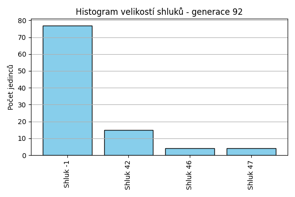
Stabilita mezi generací 91 → 92:
Shluk -1 → 42: 10 jedinců (11.0 %)
Shluk -1 → -1: 77 jedinců (84.6 %)
Shluk -1 → 47: 4 jedinců (4.4 %)
Shluk 42 → 42: 5 jedinců (100.0 %)
Shluk 46 → 46: 4 jedinců (100.0 %)
Jaccardovo mapování a overlap: Generace 91 → 92
- Shluk 42 → 42 (Jaccard: 0.33, Overlap: 1.00)
- Shluk 46 → 46 (Jaccard: 1.00, Overlap: 1.00)
Posun centroidů mezi generací 91 → 92:
- Shluk 0: 214.2275
- Shluk 1: 0.0000
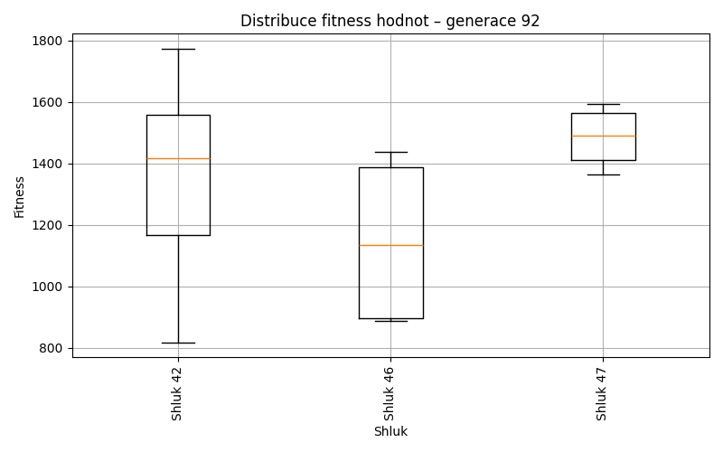
Generace 93
Stabilita mezi generací 92 → 93:
Shluk 42 → 42: 15 jedinců (100.0 %)
Shluk -1 → 42: 39 jedinců (50.6 %)
Shluk -1 → -1: 38 jedinců (49.4 %)
Shluk 47 → -1: 4 jedinců (100.0 %)
Shluk 46 → 46: 4 jedinců (100.0 %)
Jaccardovo mapování a overlap: Generace 92 → 93
- Shluk 42 → 42 (Jaccard: 0.28, Overlap: 1.00)
- Shluk 47 → žádný vhodný přechod
- Shluk 46 → 46 (Jaccard: 1.00, Overlap: 1.00)
Posun centroidů mezi generací 92 → 93:
- Shluk 0: 425.0950
- Shluk 1: 0.0000
Generace 94
Stabilita mezi generací 93 → 94:
Shluk 42 → 42: 53 jedinců (98.1 %)
Shluk 42 → -1: 1 jedinců (1.9 %)
Shluk -1 → -1: 41 jedinců (97.6 %)
Shluk -1 → 42: 1 jedinců (2.4 %)
Shluk 46 → 46: 4 jedinců (100.0 %)
Jaccardovo mapování a overlap: Generace 93 → 94
- Shluk 42 → 42 (Jaccard: 0.96, Overlap: 0.98)
- Shluk 46 → 46 (Jaccard: 1.00, Overlap: 1.00)
Posun centroidů mezi generací 93 → 94:
- Shluk 0: 10.3844
- Shluk 1: 0.0000
Generace 95
Stabilita mezi generací 94 → 95:
Shluk 42 → -1: 16 jedinců (29.6 %)
Shluk 42 → 48: 4 jedinců (7.4 %)
Shluk 42 → 42: 12 jedinců (22.2 %)
Shluk 42 → 49: 6 jedinců (11.1 %)
Shluk 42 → 51: 12 jedinců (22.2 %)
Shluk 42 → 53: 4 jedinců (7.4 %)
Shluk -1 → -1: 31 jedinců (73.8 %)
Shluk -1 → 50: 4 jedinců (9.5 %)
Shluk -1 → 52: 7 jedinců (16.7 %)
Shluk 46 → 46: 4 jedinců (100.0 %)
Jaccardovo mapování a overlap: Generace 94 → 95
- Shluk 42 → 42 (Jaccard: 0.22, Overlap: 1.00)
- Shluk 46 → 46 (Jaccard: 1.00, Overlap: 1.00)
Posun centroidů mezi generací 94 → 95:
- Shluk 0: 494.2268
- Shluk 1: 929.0298
Generace 96
Stabilita mezi generací 95 → 96:
Shluk -1 → -1: 46 jedinců (97.9 %)
Shluk -1 → 51: 1 jedinců (2.1 %)
Shluk 48 → 48: 4 jedinců (100.0 %)
Shluk 42 → 42: 11 jedinců (91.7 %)
Shluk 42 → -1: 1 jedinců (8.3 %)
Shluk 49 → 49: 6 jedinců (100.0 %)
Shluk 50 → 50: 4 jedinců (100.0 %)
Shluk 51 → 51: 12 jedinců (100.0 %)
Shluk 46 → 46: 4 jedinců (100.0 %)
Shluk 52 → 52: 7 jedinců (100.0 %)
Shluk 53 → 53: 4 jedinců (100.0 %)
Jaccardovo mapování a overlap: Generace 95 → 96
- Shluk 48 → 48 (Jaccard: 1.00, Overlap: 1.00)
- Shluk 42 → 42 (Jaccard: 0.92, Overlap: 1.00)
- Shluk 49 → 49 (Jaccard: 1.00, Overlap: 1.00)
- Shluk 50 → 50 (Jaccard: 1.00, Overlap: 1.00)
- Shluk 51 → 51 (Jaccard: 0.92, Overlap: 1.00)
- Shluk 46 → 46 (Jaccard: 1.00, Overlap: 1.00)
- Shluk 52 → 52 (Jaccard: 1.00, Overlap: 1.00)
- Shluk 53 → 53 (Jaccard: 1.00, Overlap: 1.00)
Posun centroidů mezi generací 95 → 96:
- Shluk 0: 71.4941
- Shluk 1: 0.0000
- Shluk 2: 32.6076
- Shluk 3: 14.3175
- Shluk 4: 0.0000
- Shluk 5: 0.0000
- Shluk 6: 0.0000
- Shluk 7: 0.0000
Generace 97
Stabilita mezi generací 96 → 97:
Shluk -1 → -1: 46 jedinců (97.9 %)
Shluk -1 → 46: 1 jedinců (2.1 %)
Shluk 48 → -1: 4 jedinců (100.0 %)
Shluk 42 → -1: 11 jedinců (100.0 %)
Shluk 49 → -1: 6 jedinců (100.0 %)
Shluk 50 → 50: 4 jedinců (100.0 %)
Shluk 51 → -1: 9 jedinců (69.2 %)
Shluk 51 → 51: 4 jedinců (30.8 %)
Shluk 46 → 46: 4 jedinců (100.0 %)
Shluk 52 → -1: 7 jedinců (100.0 %)
Shluk 53 → -1: 4 jedinců (100.0 %)
Jaccardovo mapování a overlap: Generace 96 → 97
- Shluk 48 → žádný vhodný přechod
- Shluk 42 → žádný vhodný přechod
- Shluk 49 → žádný vhodný přechod
- Shluk 50 → 50 (Jaccard: 1.00, Overlap: 1.00)
- Shluk 51 → 51 (Jaccard: 0.31, Overlap: 1.00)
- Shluk 46 → 46 (Jaccard: 0.80, Overlap: 1.00)
- Shluk 52 → žádný vhodný přechod
- Shluk 53 → žádný vhodný přechod
Posun centroidů mezi generací 96 → 97:
- Shluk 0: 728.4731
- Shluk 1: 935.7783
- Shluk 2: 653.0030
Generace 98
Stabilita mezi generací 97 → 98:
Shluk -1 → -1: 86 jedinců (98.9 %)
Shluk -1 → 46: 1 jedinců (1.1 %)
Shluk 50 → 50: 4 jedinců (100.0 %)
Shluk 46 → 46: 5 jedinců (100.0 %)
Shluk 51 → 51: 4 jedinců (100.0 %)
Jaccardovo mapování a overlap: Generace 97 → 98
- Shluk 50 → 50 (Jaccard: 1.00, Overlap: 1.00)
- Shluk 46 → 46 (Jaccard: 0.83, Overlap: 1.00)
- Shluk 51 → 51 (Jaccard: 1.00, Overlap: 1.00)
Posun centroidů mezi generací 97 → 98:
- Shluk 0: 0.0000
- Shluk 1: 49.3742
- Shluk 2: 0.0000
Generace 99

Stabilita mezi generací 98 → 99:
Shluk -1 → 50: 15 jedinců (17.4 %)
Shluk -1 → 51: 28 jedinců (32.6 %)
Shluk -1 → -1: 38 jedinců (44.2 %)
Shluk -1 → 54: 5 jedinců (5.8 %)
Shluk 50 → -1: 4 jedinců (100.0 %)
Shluk 46 → 46: 6 jedinců (100.0 %)
Shluk 51 → 51: 4 jedinců (100.0 %)
Jaccardovo mapování a overlap: Generace 98 → 99
- Shluk 50 → žádný vhodný přechod
- Shluk 46 → 46 (Jaccard: 1.00, Overlap: 1.00)
- Shluk 51 → 51 (Jaccard: 0.12, Overlap: 1.00)
Posun centroidů mezi generací 98 → 99:
- Shluk 0: 725.3352
- Shluk 1: 974.8401
- Shluk 2: 984.7977
Generace 100
Stabilita mezi generací 99 → 100:
Shluk 50 → -1: 5 jedinců (33.3 %)
Shluk 50 → 50: 9 jedinců (60.0 %)
Shluk 50 → 51: 1 jedinců (6.7 %)
Shluk 51 → 51: 32 jedinců (100.0 %)
Shluk -1 → -1: 42 jedinců (100.0 %)
Shluk 46 → 46: 6 jedinců (100.0 %)
Shluk 54 → 54: 5 jedinců (100.0 %)
Jaccardovo mapování a overlap: Generace 99 → 100
- Shluk 50 → 50 (Jaccard: 0.60, Overlap: 1.00)
- Shluk 51 → 51 (Jaccard: 0.97, Overlap: 1.00)
- Shluk 46 → 46 (Jaccard: 1.00, Overlap: 1.00)
- Shluk 54 → 54 (Jaccard: 1.00, Overlap: 1.00)
Posun centroidů mezi generací 99 → 100:
- Shluk 0: 121.8884
- Shluk 1: 5.0991
- Shluk 2: 0.0000
- Shluk 3: 0.0000
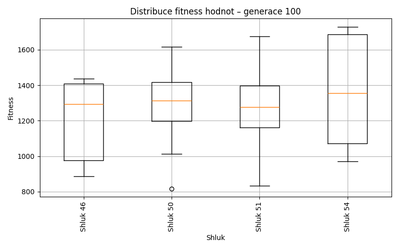
Generace 101
Stabilita mezi generací 100 → 101:
Shluk -1 → 50: 5 jedinců (10.6 %)
Shluk -1 → -1: 41 jedinců (87.2 %)
Shluk -1 → 51: 1 jedinců (2.1 %)
Shluk 51 → 51: 33 jedinců (100.0 %)
Shluk 50 → 50: 9 jedinců (100.0 %)
Shluk 46 → 46: 6 jedinců (100.0 %)
Shluk 54 → 54: 5 jedinců (100.0 %)
Jaccardovo mapování a overlap: Generace 100 → 101
- Shluk 51 → 51 (Jaccard: 0.97, Overlap: 1.00)
- Shluk 50 → 50 (Jaccard: 0.64, Overlap: 1.00)
- Shluk 46 → 46 (Jaccard: 1.00, Overlap: 1.00)
- Shluk 54 → 54 (Jaccard: 1.00, Overlap: 1.00)
Posun centroidů mezi generací 100 → 101:
- Shluk 0: 140.6624
- Shluk 1: 29.7546
- Shluk 2: 0.0000
- Shluk 3: 0.0000
Generace 102
Stabilita mezi generací 101 → 102:
Shluk 50 → 50: 14 jedinců (100.0 %)
Shluk 51 → 51: 32 jedinců (94.1 %)
Shluk 51 → 55: 2 jedinců (5.9 %)
Shluk -1 → -1: 38 jedinců (92.7 %)
Shluk -1 → 55: 2 jedinců (4.9 %)
Shluk -1 → 51: 1 jedinců (2.4 %)
Shluk 46 → 46: 6 jedinců (100.0 %)
Shluk 54 → 54: 5 jedinců (100.0 %)
Jaccardovo mapování a overlap: Generace 101 → 102
- Shluk 50 → 50 (Jaccard: 1.00, Overlap: 1.00)
- Shluk 51 → 51 (Jaccard: 0.91, Overlap: 0.97)
- Shluk 46 → 46 (Jaccard: 1.00, Overlap: 1.00)
- Shluk 54 → 54 (Jaccard: 1.00, Overlap: 1.00)
Posun centroidů mezi generací 101 → 102:
- Shluk 0: 0.0000
- Shluk 1: 13.7828
- Shluk 2: 0.0000
- Shluk 3: 1203.0818
Generace 103
Stabilita mezi generací 102 → 103:
Shluk 50 → 50: 13 jedinců (92.9 %)
Shluk 50 → -1: 1 jedinců (7.1 %)
Shluk 51 → 51: 32 jedinců (97.0 %)
Shluk 51 → 56: 1 jedinců (3.0 %)
Shluk -1 → -1: 34 jedinců (89.5 %)
Shluk -1 → 56: 3 jedinců (7.9 %)
Shluk -1 → 55: 1 jedinců (2.6 %)
Shluk 46 → 46: 6 jedinců (100.0 %)
Shluk 55 → 51: 1 jedinců (25.0 %)
Shluk 55 → 55: 3 jedinců (75.0 %)
Shluk 54 → 54: 5 jedinců (100.0 %)
Jaccardovo mapování a overlap: Generace 102 → 103
- Shluk 50 → 50 (Jaccard: 0.93, Overlap: 1.00)
- Shluk 51 → 51 (Jaccard: 0.94, Overlap: 0.97)
- Shluk 46 → 46 (Jaccard: 1.00, Overlap: 1.00)
- Shluk 55 → 55 (Jaccard: 0.60, Overlap: 0.75)
- Shluk 54 → 54 (Jaccard: 1.00, Overlap: 1.00)
Posun centroidů mezi generací 102 → 103:
- Shluk 0: 22.3467
- Shluk 1: 8.4636
- Shluk 2: 0.0000
- Shluk 3: 613.7460
- Shluk 4: 1188.6559
Generace 104
Stabilita mezi generací 103 → 104:
Shluk 50 → 50: 12 jedinců (92.3 %)
Shluk 50 → 51: 1 jedinců (7.7 %)
Shluk 51 → 51: 33 jedinců (100.0 %)
Shluk -1 → -1: 34 jedinců (97.1 %)
Shluk -1 → 56: 1 jedinců (2.9 %)
Shluk 46 → 46: 5 jedinců (83.3 %)
Shluk 46 → 54: 1 jedinců (16.7 %)
Shluk 56 → 56: 4 jedinců (100.0 %)
Shluk 55 → 55: 4 jedinců (100.0 %)
Shluk 54 → 54: 5 jedinců (100.0 %)
Jaccardovo mapování a overlap: Generace 103 → 104
- Shluk 50 → 50 (Jaccard: 0.92, Overlap: 1.00)
- Shluk 51 → 51 (Jaccard: 0.97, Overlap: 1.00)
- Shluk 46 → 46 (Jaccard: 0.83, Overlap: 1.00)
- Shluk 56 → 56 (Jaccard: 0.80, Overlap: 1.00)
- Shluk 55 → 55 (Jaccard: 1.00, Overlap: 1.00)
- Shluk 54 → 54 (Jaccard: 0.83, Overlap: 1.00)
Posun centroidů mezi generací 103 → 104:
- Shluk 0: 18.7925
- Shluk 1: 8.6789
- Shluk 2: 1187.0257
- Shluk 3: 1155.3039
- Shluk 4: 0.0000
- Shluk 5: 54.0549
Generace 105
Stabilita mezi generací 104 → 105:
Shluk 50 → 50: 12 jedinců (100.0 %)
Shluk 51 → 51: 34 jedinců (100.0 %)
Shluk -1 → -1: 34 jedinců (100.0 %)
Shluk 56 → 56: 5 jedinců (100.0 %)
Shluk 46 → 46: 5 jedinců (100.0 %)
Shluk 55 → 55: 4 jedinců (100.0 %)
Shluk 54 → 54: 6 jedinců (100.0 %)
Jaccardovo mapování a overlap: Generace 104 → 105
- Shluk 50 → 50 (Jaccard: 1.00, Overlap: 1.00)
- Shluk 51 → 51 (Jaccard: 1.00, Overlap: 1.00)
- Shluk 56 → 56 (Jaccard: 1.00, Overlap: 1.00)
- Shluk 46 → 46 (Jaccard: 1.00, Overlap: 1.00)
- Shluk 55 → 55 (Jaccard: 1.00, Overlap: 1.00)
- Shluk 54 → 54 (Jaccard: 1.00, Overlap: 1.00)
Posun centroidů mezi generací 104 → 105:
- Shluk 0: 0.0000
- Shluk 1: 0.0000
- Shluk 2: 0.0000
- Shluk 3: 0.0000
- Shluk 4: 0.0000
- Shluk 5: 0.0000
Generace 106
Stabilita mezi generací 105 → 106:
Shluk 50 → 50: 3 jedinců (25.0 %)
Shluk 50 → -1: 9 jedinců (75.0 %)
Shluk 51 → 51: 34 jedinců (100.0 %)
Shluk -1 → -1: 33 jedinců (97.1 %)
Shluk -1 → 46: 1 jedinců (2.9 %)
Shluk 56 → 56: 5 jedinců (100.0 %)
Shluk 46 → 46: 5 jedinců (100.0 %)
Shluk 55 → -1: 3 jedinců (75.0 %)
Shluk 55 → 50: 1 jedinců (25.0 %)
Shluk 54 → 54: 6 jedinců (100.0 %)
Jaccardovo mapování a overlap: Generace 105 → 106
- Shluk 50 → 50 (Jaccard: 0.23, Overlap: 0.75)
- Shluk 51 → 51 (Jaccard: 1.00, Overlap: 1.00)
- Shluk 56 → 56 (Jaccard: 1.00, Overlap: 1.00)
- Shluk 46 → 46 (Jaccard: 0.83, Overlap: 1.00)
- Shluk 55 → 50 (Jaccard: 0.14, Overlap: 0.25)
- Shluk 54 → 54 (Jaccard: 1.00, Overlap: 1.00)
Posun centroidů mezi generací 105 → 106:
- Shluk 0: 170.6151
- Shluk 1: 0.0000
- Shluk 2: 0.0000
- Shluk 3: 36.9373
- Shluk 4: 1200.3662
Generace 107
Stabilita mezi generací 106 → 107:
Shluk 50 → 50: 4 jedinců (100.0 %)
Shluk 51 → 51: 32 jedinců (94.1 %)
Shluk 51 → -1: 2 jedinců (5.9 %)
Shluk -1 → 56: 1 jedinců (2.2 %)
Shluk -1 → -1: 39 jedinců (86.7 %)
Shluk -1 → 57: 5 jedinců (11.1 %)
Shluk 56 → 56: 5 jedinců (100.0 %)
Shluk 46 → 46: 6 jedinců (100.0 %)
Shluk 54 → 54: 4 jedinců (66.7 %)
Shluk 54 → 57: 1 jedinců (16.7 %)
Shluk 54 → 51: 1 jedinců (16.7 %)
Jaccardovo mapování a overlap: Generace 106 → 107
- Shluk 50 → 50 (Jaccard: 1.00, Overlap: 1.00)
- Shluk 51 → 51 (Jaccard: 0.91, Overlap: 0.97)
- Shluk 56 → 56 (Jaccard: 0.83, Overlap: 1.00)
- Shluk 46 → 46 (Jaccard: 1.00, Overlap: 1.00)
- Shluk 54 → 54 (Jaccard: 0.67, Overlap: 1.00)
Posun centroidů mezi generací 106 → 107:
- Shluk 0: 0.0000
- Shluk 1: 653.4442
- Shluk 2: 747.6016
- Shluk 3: 1180.6315
- Shluk 4: 744.4773
Generace 108
Stabilita mezi generací 107 → 108:
Shluk 50 → 50: 4 jedinců (100.0 %)
Shluk 51 → 51: 33 jedinců (100.0 %)
Shluk 56 → 56: 5 jedinců (83.3 %)
Shluk 56 → -1: 1 jedinců (16.7 %)
Shluk -1 → -1: 39 jedinců (95.1 %)
Shluk -1 → 51: 2 jedinců (4.9 %)
Shluk 57 → 57: 6 jedinců (100.0 %)
Shluk 46 → -1: 1 jedinců (16.7 %)
Shluk 46 → 46: 5 jedinců (83.3 %)
Shluk 54 → 54: 4 jedinců (100.0 %)
Jaccardovo mapování a overlap: Generace 107 → 108
- Shluk 50 → 50 (Jaccard: 1.00, Overlap: 1.00)
- Shluk 51 → 51 (Jaccard: 0.94, Overlap: 1.00)
- Shluk 56 → 56 (Jaccard: 0.83, Overlap: 1.00)
- Shluk 57 → 57 (Jaccard: 1.00, Overlap: 1.00)
- Shluk 46 → 46 (Jaccard: 0.83, Overlap: 1.00)
- Shluk 54 → 54 (Jaccard: 1.00, Overlap: 1.00)
Posun centroidů mezi generací 107 → 108:
- Shluk 0: 0.0000
- Shluk 1: 0.0000
- Shluk 2: 31.3524
- Shluk 3: 53.9370
- Shluk 4: 40.1522
- Shluk 5: 0.0000
Generace 109
Stabilita mezi generací 108 → 109:
Shluk 50 → 50: 4 jedinců (100.0 %)
Shluk 51 → -1: 2 jedinců (5.7 %)
Shluk 51 → 51: 33 jedinců (94.3 %)
Shluk 56 → 56: 5 jedinců (100.0 %)
Shluk -1 → -1: 39 jedinců (95.1 %)
Shluk -1 → 51: 2 jedinců (4.9 %)
Shluk 57 → -1: 6 jedinců (100.0 %)
Shluk 46 → 46: 5 jedinců (100.0 %)
Shluk 54 → 54: 4 jedinců (100.0 %)
Jaccardovo mapování a overlap: Generace 108 → 109
- Shluk 50 → 50 (Jaccard: 1.00, Overlap: 1.00)
- Shluk 51 → 51 (Jaccard: 0.89, Overlap: 0.94)
- Shluk 56 → 56 (Jaccard: 1.00, Overlap: 1.00)
- Shluk 57 → žádný vhodný přechod
- Shluk 46 → 46 (Jaccard: 1.00, Overlap: 1.00)
- Shluk 54 → 54 (Jaccard: 1.00, Overlap: 1.00)
Posun centroidů mezi generací 108 → 109:
- Shluk 0: 0.0000
- Shluk 1: 921.7889
- Shluk 2: 13.1335
- Shluk 3: 1193.4714
- Shluk 4: 735.5658
Generace 110
Stabilita mezi generací 109 → 110:
Shluk 50 → -1: 4 jedinců (100.0 %)
Shluk -1 → -1: 37 jedinců (78.7 %)
Shluk -1 → 51: 1 jedinců (2.1 %)
Shluk -1 → 58: 5 jedinců (10.6 %)
Shluk -1 → 59: 4 jedinců (8.5 %)
Shluk 56 → -1: 5 jedinců (100.0 %)
Shluk 51 → -1: 31 jedinců (88.6 %)
Shluk 51 → 51: 4 jedinců (11.4 %)
Shluk 46 → 46: 5 jedinců (100.0 %)
Shluk 54 → -1: 4 jedinců (100.0 %)
Jaccardovo mapování a overlap: Generace 109 → 110
- Shluk 50 → žádný vhodný přechod
- Shluk 56 → žádný vhodný přechod
- Shluk 51 → 51 (Jaccard: 0.11, Overlap: 0.80)
- Shluk 46 → 46 (Jaccard: 1.00, Overlap: 1.00)
- Shluk 54 → žádný vhodný přechod
Posun centroidů mezi generací 109 → 110:
- Shluk 0: 289.3532
- Shluk 1: 782.5478
- Shluk 2: 689.7830
- Shluk 3: 0.0000
Generace 111
Stabilita mezi generací 110 → 111:
Shluk -1 → 60: 5 jedinců (6.2 %)
Shluk -1 → 61: 11 jedinců (13.6 %)
Shluk -1 → 62: 5 jedinců (6.2 %)
Shluk -1 → -1: 48 jedinců (59.3 %)
Shluk -1 → 63: 5 jedinců (6.2 %)
Shluk -1 → 64: 4 jedinců (4.9 %)
Shluk -1 → 51: 3 jedinců (3.7 %)
Shluk 51 → 51: 5 jedinců (100.0 %)
Shluk 58 → 58: 5 jedinců (100.0 %)
Shluk 59 → 59: 4 jedinců (100.0 %)
Shluk 46 → 46: 5 jedinců (100.0 %)
Jaccardovo mapování a overlap: Generace 110 → 111
- Shluk 51 → 51 (Jaccard: 0.62, Overlap: 1.00)
- Shluk 58 → 58 (Jaccard: 1.00, Overlap: 1.00)
- Shluk 59 → 59 (Jaccard: 1.00, Overlap: 1.00)
- Shluk 46 → 46 (Jaccard: 1.00, Overlap: 1.00)
Posun centroidů mezi generací 110 → 111:
- Shluk 0: 273.4263
- Shluk 1: 783.8809
- Shluk 2: 767.4678
- Shluk 3: 1063.7556
Generace 112
Stabilita mezi generací 111 → 112:
Shluk 60 → 60: 4 jedinců (80.0 %)
Shluk 60 → -1: 1 jedinců (20.0 %)
Shluk 61 → -1: 11 jedinců (100.0 %)
Shluk 62 → -1: 5 jedinců (100.0 %)
Shluk -1 → -1: 48 jedinců (100.0 %)
Shluk 51 → 51: 4 jedinců (50.0 %)
Shluk 51 → -1: 4 jedinců (50.0 %)
Shluk 58 → 58: 4 jedinců (80.0 %)
Shluk 58 → -1: 1 jedinců (20.0 %)
Shluk 59 → 59: 4 jedinců (100.0 %)
Shluk 63 → -1: 5 jedinců (100.0 %)
Shluk 46 → -1: 5 jedinců (100.0 %)
Shluk 64 → -1: 4 jedinců (100.0 %)
Jaccardovo mapování a overlap: Generace 111 → 112
- Shluk 60 → 60 (Jaccard: 0.80, Overlap: 1.00)
- Shluk 61 → žádný vhodný přechod
- Shluk 62 → žádný vhodný přechod
- Shluk 51 → 51 (Jaccard: 0.50, Overlap: 1.00)
- Shluk 58 → 58 (Jaccard: 0.80, Overlap: 1.00)
- Shluk 59 → 59 (Jaccard: 1.00, Overlap: 1.00)
- Shluk 63 → žádný vhodný přechod
- Shluk 46 → žádný vhodný přechod
- Shluk 64 → žádný vhodný přechod
Posun centroidů mezi generací 111 → 112:
- Shluk 0: 54.6644
- Shluk 1: 46.8792
- Shluk 2: 257.4180
- Shluk 3: 751.0543
Generace 113
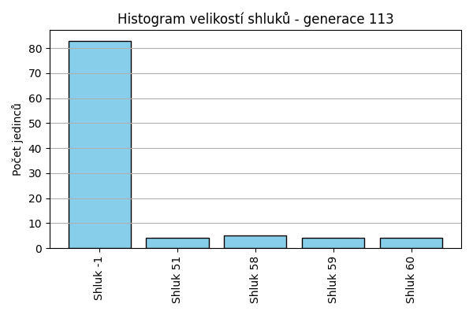
Stabilita mezi generací 112 → 113:
Shluk 60 → 60: 4 jedinců (100.0 %)
Shluk -1 → -1: 83 jedinců (98.8 %)
Shluk -1 → 58: 1 jedinců (1.2 %)
Shluk 51 → 51: 4 jedinců (100.0 %)
Shluk 58 → 58: 4 jedinců (100.0 %)
Shluk 59 → 59: 4 jedinců (100.0 %)
Jaccardovo mapování a overlap: Generace 112 → 113
- Shluk 60 → 60 (Jaccard: 1.00, Overlap: 1.00)
- Shluk 51 → 51 (Jaccard: 1.00, Overlap: 1.00)
- Shluk 58 → 58 (Jaccard: 0.80, Overlap: 1.00)
- Shluk 59 → 59 (Jaccard: 1.00, Overlap: 1.00)
Posun centroidů mezi generací 112 → 113:
- Shluk 0: 0.0000
- Shluk 1: 17.9889
- Shluk 2: 0.0000
- Shluk 3: 0.0000
Generace 114
Stabilita mezi generací 113 → 114:
Shluk 60 → 60: 4 jedinců (100.0 %)
Shluk -1 → 65: 9 jedinců (10.8 %)
Shluk -1 → 66: 4 jedinců (4.8 %)
Shluk -1 → -1: 42 jedinců (50.6 %)
Shluk -1 → 67: 4 jedinců (4.8 %)
Shluk -1 → 68: 7 jedinců (8.4 %)
Shluk -1 → 69: 4 jedinců (4.8 %)
Shluk -1 → 58: 2 jedinců (2.4 %)
Shluk -1 → 70: 5 jedinců (6.0 %)
Shluk -1 → 51: 1 jedinců (1.2 %)
Shluk -1 → 71: 5 jedinců (6.0 %)
Shluk 51 → 51: 4 jedinců (100.0 %)
Shluk 58 → 58: 5 jedinců (100.0 %)
Shluk 59 → 59: 4 jedinců (100.0 %)
Jaccardovo mapování a overlap: Generace 113 → 114
- Shluk 60 → 60 (Jaccard: 1.00, Overlap: 1.00)
- Shluk 51 → 51 (Jaccard: 0.80, Overlap: 1.00)
- Shluk 58 → 58 (Jaccard: 0.71, Overlap: 1.00)
- Shluk 59 → 59 (Jaccard: 1.00, Overlap: 1.00)
Posun centroidů mezi generací 113 → 114:
- Shluk 0: 0.0000
- Shluk 1: 59.6187
- Shluk 2: 285.4646
- Shluk 3: 769.9903
Generace 115
Stabilita mezi generací 114 → 115:
Shluk 60 → 60: 4 jedinců (100.0 %)
Shluk 65 → 65: 8 jedinců (88.9 %)
Shluk 65 → -1: 1 jedinců (11.1 %)
Shluk 66 → 66: 4 jedinců (100.0 %)
Shluk -1 → -1: 36 jedinců (85.7 %)
Shluk -1 → 72: 4 jedinců (9.5 %)
Shluk -1 → 58: 1 jedinců (2.4 %)
Shluk -1 → 70: 1 jedinců (2.4 %)
Shluk 51 → 51: 5 jedinců (100.0 %)
Shluk 67 → 67: 4 jedinců (100.0 %)
Shluk 58 → 58: 6 jedinců (85.7 %)
Shluk 58 → -1: 1 jedinců (14.3 %)
Shluk 68 → 68: 7 jedinců (100.0 %)
Shluk 59 → 59: 4 jedinců (100.0 %)
Shluk 69 → 69: 4 jedinců (100.0 %)
Shluk 70 → 70: 4 jedinců (80.0 %)
Shluk 70 → 58: 1 jedinců (20.0 %)
Shluk 71 → -1: 5 jedinců (100.0 %)
Jaccardovo mapování a overlap: Generace 114 → 115
- Shluk 60 → 60 (Jaccard: 1.00, Overlap: 1.00)
- Shluk 65 → 65 (Jaccard: 0.89, Overlap: 1.00)
- Shluk 66 → 66 (Jaccard: 1.00, Overlap: 1.00)
- Shluk 51 → 51 (Jaccard: 1.00, Overlap: 1.00)
- Shluk 67 → 67 (Jaccard: 1.00, Overlap: 1.00)
- Shluk 58 → 58 (Jaccard: 0.67, Overlap: 0.86)
- Shluk 68 → 68 (Jaccard: 1.00, Overlap: 1.00)
- Shluk 59 → 59 (Jaccard: 1.00, Overlap: 1.00)
- Shluk 69 → 69 (Jaccard: 1.00, Overlap: 1.00)
- Shluk 70 → 70 (Jaccard: 0.67, Overlap: 0.80)
- Shluk 71 → žádný vhodný přechod
Posun centroidů mezi generací 114 → 115:
- Shluk 0: 0.0000
- Shluk 1: 46.4366
- Shluk 2: 240.2995
- Shluk 3: 267.9151
- Shluk 4: 361.8397
- Shluk 5: 522.9080
- Shluk 6: 715.8048
- Shluk 7: 54.7317
- Shluk 8: 0.0000
- Shluk 9: 0.0000
- Shluk 10: 0.0000
Generace 116
Stabilita mezi generací 115 → 116:
Shluk 60 → -1: 4 jedinců (100.0 %)
Shluk 65 → 65: 8 jedinců (100.0 %)
Shluk 66 → 66: 4 jedinců (100.0 %)
Shluk -1 → -1: 40 jedinců (93.0 %)
Shluk -1 → 58: 2 jedinců (4.7 %)
Shluk -1 → 65: 1 jedinců (2.3 %)
Shluk 51 → 51: 5 jedinců (100.0 %)
Shluk 72 → 72: 4 jedinců (100.0 %)
Shluk 67 → 67: 4 jedinců (100.0 %)
Shluk 58 → -1: 1 jedinců (12.5 %)
Shluk 58 → 58: 7 jedinců (87.5 %)
Shluk 68 → 68: 7 jedinců (100.0 %)
Shluk 59 → 59: 4 jedinců (100.0 %)
Shluk 69 → 69: 4 jedinců (100.0 %)
Shluk 70 → 70: 5 jedinců (100.0 %)
Jaccardovo mapování a overlap: Generace 115 → 116
- Shluk 60 → žádný vhodný přechod
- Shluk 65 → 65 (Jaccard: 0.89, Overlap: 1.00)
- Shluk 66 → 66 (Jaccard: 1.00, Overlap: 1.00)
- Shluk 51 → 51 (Jaccard: 1.00, Overlap: 1.00)
- Shluk 72 → 72 (Jaccard: 1.00, Overlap: 1.00)
- Shluk 67 → 67 (Jaccard: 1.00, Overlap: 1.00)
- Shluk 58 → 58 (Jaccard: 0.70, Overlap: 0.88)
- Shluk 68 → 68 (Jaccard: 1.00, Overlap: 1.00)
- Shluk 59 → 59 (Jaccard: 1.00, Overlap: 1.00)
- Shluk 69 → 69 (Jaccard: 1.00, Overlap: 1.00)
- Shluk 70 → 70 (Jaccard: 1.00, Overlap: 1.00)
Posun centroidů mezi generací 115 → 116:
- Shluk 0: 276.2902
- Shluk 1: 538.1115
- Shluk 2: 241.7209
- Shluk 3: 267.9151
- Shluk 4: 498.8310
- Shluk 5: 522.9080
- Shluk 6: 823.8330
- Shluk 7: 975.8530
- Shluk 8: 981.6499
- Shluk 9: 1050.4865
Generace 117
Stabilita mezi generací 116 → 117:
Shluk -1 → 67: 4 jedinců (8.9 %)
Shluk -1 → -1: 36 jedinců (80.0 %)
Shluk -1 → 73: 4 jedinců (8.9 %)
Shluk -1 → 72: 1 jedinců (2.2 %)
Shluk 65 → 65: 7 jedinců (77.8 %)
Shluk 65 → 70: 1 jedinců (11.1 %)
Shluk 65 → -1: 1 jedinců (11.1 %)
Shluk 66 → 66: 4 jedinců (100.0 %)
Shluk 51 → 51: 4 jedinců (80.0 %)
Shluk 51 → -1: 1 jedinců (20.0 %)
Shluk 72 → 72: 3 jedinců (75.0 %)
Shluk 72 → -1: 1 jedinců (25.0 %)
Shluk 67 → -1: 4 jedinců (100.0 %)
Shluk 68 → 68: 7 jedinců (100.0 %)
Shluk 58 → 70: 1 jedinců (11.1 %)
Shluk 58 → 58: 8 jedinců (88.9 %)
Shluk 59 → 59: 4 jedinců (100.0 %)
Shluk 69 → -1: 4 jedinců (100.0 %)
Shluk 70 → 70: 5 jedinců (100.0 %)
Jaccardovo mapování a overlap: Generace 116 → 117
- Shluk 65 → 65 (Jaccard: 0.78, Overlap: 1.00)
- Shluk 66 → 66 (Jaccard: 1.00, Overlap: 1.00)
- Shluk 51 → 51 (Jaccard: 0.80, Overlap: 1.00)
- Shluk 72 → 72 (Jaccard: 0.60, Overlap: 0.75)
- Shluk 67 → žádný vhodný přechod
- Shluk 68 → 68 (Jaccard: 1.00, Overlap: 1.00)
- Shluk 58 → 58 (Jaccard: 0.89, Overlap: 1.00)
- Shluk 59 → 59 (Jaccard: 1.00, Overlap: 1.00)
- Shluk 69 → žádný vhodný přechod
- Shluk 70 → 70 (Jaccard: 0.71, Overlap: 1.00)
Posun centroidů mezi generací 116 → 117:
- Shluk 0: 276.2902
- Shluk 1: 546.6746
- Shluk 2: 241.7209
- Shluk 3: 274.0839
- Shluk 4: 493.9066
- Shluk 5: 488.3616
- Shluk 6: 823.8330
- Shluk 7: 848.5713
- Shluk 8: 991.4615
- Shluk 9: 1050.4865
Generace 118
Stabilita mezi generací 117 → 118:
Shluk 67 → 67: 4 jedinců (100.0 %)
Shluk 65 → 65: 6 jedinců (85.7 %)
Shluk 65 → 70: 1 jedinců (14.3 %)
Shluk 66 → 66: 4 jedinců (100.0 %)
Shluk -1 → -1: 42 jedinců (89.4 %)
Shluk -1 → 70: 1 jedinců (2.1 %)
Shluk -1 → 65: 3 jedinců (6.4 %)
Shluk -1 → 58: 1 jedinců (2.1 %)
Shluk 51 → 51: 4 jedinců (100.0 %)
Shluk 72 → 72: 4 jedinců (100.0 %)
Shluk 68 → 68: 6 jedinců (85.7 %)
Shluk 68 → 70: 1 jedinců (14.3 %)
Shluk 70 → 70: 7 jedinců (100.0 %)
Shluk 59 → 59: 4 jedinců (100.0 %)
Shluk 58 → 58: 8 jedinců (100.0 %)
Shluk 73 → -1: 4 jedinců (100.0 %)
Jaccardovo mapování a overlap: Generace 117 → 118
- Shluk 67 → 67 (Jaccard: 1.00, Overlap: 1.00)
- Shluk 65 → 65 (Jaccard: 0.60, Overlap: 0.86)
- Shluk 66 → 66 (Jaccard: 1.00, Overlap: 1.00)
- Shluk 51 → 51 (Jaccard: 1.00, Overlap: 1.00)
- Shluk 72 → 72 (Jaccard: 1.00, Overlap: 1.00)
- Shluk 68 → 68 (Jaccard: 0.86, Overlap: 1.00)
- Shluk 70 → 70 (Jaccard: 0.70, Overlap: 1.00)
- Shluk 59 → 59 (Jaccard: 1.00, Overlap: 1.00)
- Shluk 58 → 58 (Jaccard: 0.89, Overlap: 1.00)
- Shluk 73 → žádný vhodný přechod
Posun centroidů mezi generací 117 → 118:
- Shluk 0: 0.0000
- Shluk 1: 30.3189
- Shluk 2: 37.9524
- Shluk 3: 16.0774
- Shluk 4: 0.0000
- Shluk 5: 0.0000
- Shluk 6: 0.0000
- Shluk 7: 927.4349
- Shluk 8: 991.4615
Generace 119


Stabilita mezi generací 118 → 119:
Shluk 67 → 67: 4 jedinců (100.0 %)
Shluk 65 → 65: 6 jedinců (66.7 %)
Shluk 65 → -1: 3 jedinců (33.3 %)
Shluk 66 → -1: 4 jedinců (100.0 %)
Shluk -1 → -1: 42 jedinců (91.3 %)
Shluk -1 → 74: 4 jedinců (8.7 %)
Shluk 51 → 51: 4 jedinců (100.0 %)
Shluk 72 → -1: 4 jedinců (100.0 %)
Shluk 68 → -1: 6 jedinců (100.0 %)
Shluk 70 → -1: 10 jedinců (100.0 %)
Shluk 59 → 58: 1 jedinců (25.0 %)
Shluk 59 → -1: 3 jedinců (75.0 %)
Shluk 58 → 58: 9 jedinců (100.0 %)
Jaccardovo mapování a overlap: Generace 118 → 119
- Shluk 67 → 67 (Jaccard: 1.00, Overlap: 1.00)
- Shluk 65 → 65 (Jaccard: 0.67, Overlap: 1.00)
- Shluk 66 → žádný vhodný přechod
- Shluk 51 → 51 (Jaccard: 1.00, Overlap: 1.00)
- Shluk 72 → žádný vhodný přechod
- Shluk 68 → žádný vhodný přechod
- Shluk 70 → žádný vhodný přechod
- Shluk 59 → 58 (Jaccard: 0.08, Overlap: 0.25)
- Shluk 58 → 58 (Jaccard: 0.90, Overlap: 1.00)
Posun centroidů mezi generací 118 → 119:
- Shluk 0: 0.0000
- Shluk 1: 21.1147
- Shluk 2: 358.5583
- Shluk 3: 723.9411
- Shluk 4: 1008.0757
Generace 120
Stabilita mezi generací 119 → 120:
Shluk 67 → 67: 4 jedinců (100.0 %)
Shluk 65 → 65: 6 jedinců (100.0 %)
Shluk -1 → -1: 72 jedinců (100.0 %)
Shluk 51 → -1: 4 jedinců (100.0 %)
Shluk 58 → 58: 9 jedinců (90.0 %)
Shluk 58 → -1: 1 jedinců (10.0 %)
Shluk 74 → 74: 4 jedinců (100.0 %)
Jaccardovo mapování a overlap: Generace 119 → 120
- Shluk 67 → 67 (Jaccard: 1.00, Overlap: 1.00)
- Shluk 65 → 65 (Jaccard: 1.00, Overlap: 1.00)
- Shluk 51 → žádný vhodný přechod
- Shluk 58 → 58 (Jaccard: 0.90, Overlap: 1.00)
- Shluk 74 → 74 (Jaccard: 1.00, Overlap: 1.00)
Posun centroidů mezi generací 119 → 120:
- Shluk 0: 0.0000
- Shluk 1: 14.6062
- Shluk 2: 782.7247
- Shluk 3: 1167.4926
Generace 121
Stabilita mezi generací 120 → 121:
Shluk 67 → 67: 1 jedinců (25.0 %)
Shluk 67 → -1: 3 jedinců (75.0 %)
Shluk 65 → -1: 2 jedinců (33.3 %)
Shluk 65 → 65: 4 jedinců (66.7 %)
Shluk -1 → -1: 63 jedinců (81.8 %)
Shluk -1 → 67: 14 jedinců (18.2 %)
Shluk 58 → -1: 2 jedinců (22.2 %)
Shluk 58 → 58: 6 jedinců (66.7 %)
Shluk 58 → 67: 1 jedinců (11.1 %)
Shluk 74 → -1: 4 jedinců (100.0 %)
Jaccardovo mapování a overlap: Generace 120 → 121
- Shluk 67 → 67 (Jaccard: 0.05, Overlap: 0.25)
- Shluk 65 → 65 (Jaccard: 0.67, Overlap: 1.00)
- Shluk 58 → 58 (Jaccard: 0.67, Overlap: 1.00)
- Shluk 74 → žádný vhodný přechod
Posun centroidů mezi generací 120 → 121:
- Shluk 0: 740.9853
- Shluk 1: 62.3297
- Shluk 2: 69.6506
Generace 122
Stabilita mezi generací 121 → 122:
Shluk 67 → 67: 16 jedinců (100.0 %)
Shluk -1 → -1: 73 jedinců (98.6 %)
Shluk -1 → 67: 1 jedinců (1.4 %)
Shluk 65 → 65: 4 jedinců (100.0 %)
Shluk 58 → 58: 6 jedinců (100.0 %)
Jaccardovo mapování a overlap: Generace 121 → 122
- Shluk 67 → 67 (Jaccard: 0.94, Overlap: 1.00)
- Shluk 65 → 65 (Jaccard: 1.00, Overlap: 1.00)
- Shluk 58 → 58 (Jaccard: 1.00, Overlap: 1.00)
Posun centroidů mezi generací 121 → 122:
- Shluk 0: 3.9872
- Shluk 1: 0.0000
- Shluk 2: 0.0000
Generace 123
Stabilita mezi generací 122 → 123:
Shluk 67 → 67: 17 jedinců (100.0 %)
Shluk -1 → -1: 66 jedinců (90.4 %)
Shluk -1 → 65: 2 jedinců (2.7 %)
Shluk -1 → 67: 1 jedinců (1.4 %)
Shluk -1 → 75: 4 jedinců (5.5 %)
Shluk 65 → 65: 4 jedinců (100.0 %)
Shluk 58 → 58: 6 jedinců (100.0 %)
Jaccardovo mapování a overlap: Generace 122 → 123
- Shluk 67 → 67 (Jaccard: 0.94, Overlap: 1.00)
- Shluk 65 → 65 (Jaccard: 0.67, Overlap: 1.00)
- Shluk 58 → 58 (Jaccard: 1.00, Overlap: 1.00)
Posun centroidů mezi generací 122 → 123:
- Shluk 0: 3.2056
- Shluk 1: 827.3433
- Shluk 2: 1024.6274
Generace 124
Stabilita mezi generací 123 → 124:
Shluk 67 → 67: 18 jedinců (100.0 %)
Shluk -1 → -1: 62 jedinců (93.9 %)
Shluk -1 → 76: 3 jedinců (4.5 %)
Shluk -1 → 67: 1 jedinců (1.5 %)
Shluk 65 → 65: 5 jedinců (83.3 %)
Shluk 65 → 76: 1 jedinců (16.7 %)
Shluk 75 → -1: 3 jedinců (75.0 %)
Shluk 75 → 67: 1 jedinců (25.0 %)
Shluk 58 → 58: 5 jedinců (83.3 %)
Shluk 58 → -1: 1 jedinců (16.7 %)
Jaccardovo mapování a overlap: Generace 123 → 124
- Shluk 67 → 67 (Jaccard: 0.90, Overlap: 1.00)
- Shluk 65 → 65 (Jaccard: 0.83, Overlap: 1.00)
- Shluk 75 → 67 (Jaccard: 0.04, Overlap: 0.25)
- Shluk 58 → 58 (Jaccard: 0.83, Overlap: 1.00)
Posun centroidů mezi generací 123 → 124:
- Shluk 0: 13.5996
- Shluk 1: 490.8360
- Shluk 2: 15.8269
- Shluk 3: 13.0876
Generace 125
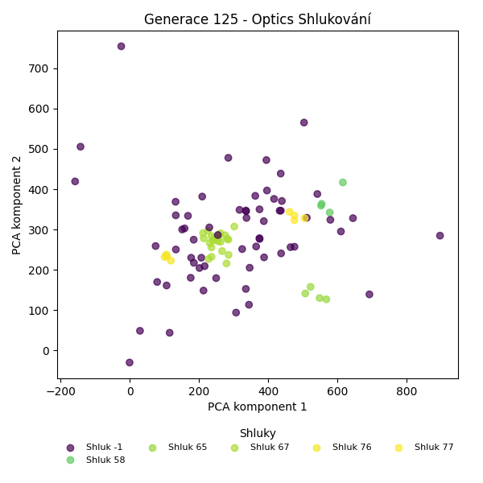
Stabilita mezi generací 124 → 125:
Shluk 67 → 67: 19 jedinců (95.0 %)
Shluk 67 → -1: 1 jedinců (5.0 %)
Shluk -1 → -1: 60 jedinců (90.9 %)
Shluk -1 → 67: 2 jedinců (3.0 %)
Shluk -1 → 77: 4 jedinců (6.1 %)
Shluk 65 → 65: 4 jedinců (80.0 %)
Shluk 65 → -1: 1 jedinců (20.0 %)
Shluk 76 → 76: 4 jedinců (100.0 %)
Shluk 58 → 58: 4 jedinců (80.0 %)
Shluk 58 → 67: 1 jedinců (20.0 %)
Jaccardovo mapování a overlap: Generace 124 → 125
- Shluk 67 → 67 (Jaccard: 0.83, Overlap: 0.95)
- Shluk 65 → 65 (Jaccard: 0.80, Overlap: 1.00)
- Shluk 76 → 76 (Jaccard: 1.00, Overlap: 1.00)
- Shluk 58 → 58 (Jaccard: 0.80, Overlap: 1.00)
Posun centroidů mezi generací 124 → 125:
- Shluk 0: 6.8504
- Shluk 1: 0.0000
- Shluk 2: 18.4511
- Shluk 3: 1008.1106
Generace 126
Stabilita mezi generací 125 → 126:
Shluk 67 → 67: 22 jedinců (100.0 %)
Shluk -1 → -1: 58 jedinců (93.5 %)
Shluk -1 → 67: 3 jedinců (4.8 %)
Shluk -1 → 65: 1 jedinců (1.6 %)
Shluk 65 → 65: 4 jedinců (100.0 %)
Shluk 76 → 76: 4 jedinců (100.0 %)
Shluk 77 → 77: 4 jedinců (100.0 %)
Shluk 58 → 58: 4 jedinců (100.0 %)
Jaccardovo mapování a overlap: Generace 125 → 126
- Shluk 67 → 67 (Jaccard: 0.88, Overlap: 1.00)
- Shluk 65 → 65 (Jaccard: 0.80, Overlap: 1.00)
- Shluk 76 → 76 (Jaccard: 1.00, Overlap: 1.00)
- Shluk 77 → 77 (Jaccard: 1.00, Overlap: 1.00)
- Shluk 58 → 58 (Jaccard: 1.00, Overlap: 1.00)
Posun centroidů mezi generací 125 → 126:
- Shluk 0: 6.7227
- Shluk 1: 0.0000
- Shluk 2: 0.0000
- Shluk 3: 0.0000
- Shluk 4: 76.3765
Generace 127
Stabilita mezi generací 126 → 127:
Shluk 67 → 67: 25 jedinců (100.0 %)
Shluk -1 → -1: 56 jedinců (96.6 %)
Shluk -1 → 65: 1 jedinců (1.7 %)
Shluk -1 → 67: 1 jedinců (1.7 %)
Shluk 65 → 65: 4 jedinců (80.0 %)
Shluk 65 → 67: 1 jedinců (20.0 %)
Shluk 76 → 76: 4 jedinců (100.0 %)
Shluk 77 → 77: 4 jedinců (100.0 %)
Shluk 58 → 58: 4 jedinců (100.0 %)
Jaccardovo mapování a overlap: Generace 126 → 127
- Shluk 67 → 67 (Jaccard: 0.93, Overlap: 1.00)
- Shluk 65 → 65 (Jaccard: 0.67, Overlap: 0.80)
- Shluk 76 → 76 (Jaccard: 1.00, Overlap: 1.00)
- Shluk 77 → 77 (Jaccard: 1.00, Overlap: 1.00)
- Shluk 58 → 58 (Jaccard: 1.00, Overlap: 1.00)
Posun centroidů mezi generací 126 → 127:
- Shluk 0: 2.3732
- Shluk 1: 0.0000
- Shluk 2: 0.0000
- Shluk 3: 0.0000
- Shluk 4: 24.3599
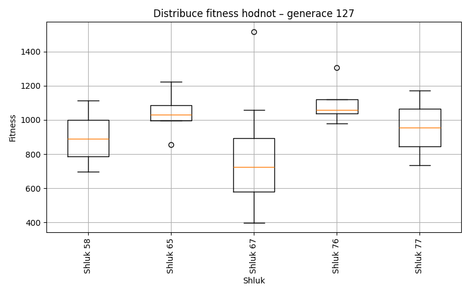
Generace 128
Stabilita mezi generací 127 → 128:
Shluk 67 → -1: 22 jedinců (81.5 %)
Shluk 67 → 77: 1 jedinců (3.7 %)
Shluk 67 → 67: 4 jedinců (14.8 %)
Shluk -1 → -1: 52 jedinců (92.9 %)
Shluk -1 → 78: 3 jedinců (5.4 %)
Shluk -1 → 67: 1 jedinců (1.8 %)
Shluk 65 → 65: 4 jedinců (80.0 %)
Shluk 65 → 78: 1 jedinců (20.0 %)
Shluk 76 → 76: 4 jedinců (100.0 %)
Shluk 77 → 77: 4 jedinců (100.0 %)
Shluk 58 → 58: 4 jedinců (100.0 %)
Jaccardovo mapování a overlap: Generace 127 → 128
- Shluk 67 → 67 (Jaccard: 0.14, Overlap: 0.80)
- Shluk 65 → 65 (Jaccard: 0.80, Overlap: 1.00)
- Shluk 76 → 76 (Jaccard: 1.00, Overlap: 1.00)
- Shluk 77 → 77 (Jaccard: 0.80, Overlap: 1.00)
- Shluk 58 → 58 (Jaccard: 1.00, Overlap: 1.00)
Posun centroidů mezi generací 127 → 128:
- Shluk 0: 62.7785
- Shluk 1: 880.3175
- Shluk 2: 201.2986
- Shluk 3: 857.6390
- Shluk 4: 29.4988
Generace 129
Stabilita mezi generací 128 → 129:
Shluk -1 → -1: 49 jedinců (66.2 %)
Shluk -1 → 79: 4 jedinců (5.4 %)
Shluk -1 → 67: 3 jedinců (4.1 %)
Shluk -1 → 80: 4 jedinců (5.4 %)
Shluk -1 → 81: 5 jedinců (6.8 %)
Shluk -1 → 82: 6 jedinců (8.1 %)
Shluk -1 → 65: 2 jedinců (2.7 %)
Shluk -1 → 76: 1 jedinců (1.4 %)
Shluk 65 → 65: 4 jedinců (100.0 %)
Shluk 77 → 67: 1 jedinců (20.0 %)
Shluk 77 → 77: 4 jedinců (80.0 %)
Shluk 76 → 76: 3 jedinců (75.0 %)
Shluk 76 → 81: 1 jedinců (25.0 %)
Shluk 67 → 67: 5 jedinců (100.0 %)
Shluk 58 → 58: 4 jedinců (100.0 %)
Shluk 78 → 78: 4 jedinců (100.0 %)
Jaccardovo mapování a overlap: Generace 128 → 129
- Shluk 65 → 65 (Jaccard: 0.67, Overlap: 1.00)
- Shluk 77 → 77 (Jaccard: 0.80, Overlap: 1.00)
- Shluk 76 → 76 (Jaccard: 0.60, Overlap: 0.75)
- Shluk 67 → 67 (Jaccard: 0.56, Overlap: 1.00)
- Shluk 58 → 58 (Jaccard: 1.00, Overlap: 1.00)
- Shluk 78 → 78 (Jaccard: 1.00, Overlap: 1.00)
Posun centroidů mezi generací 128 → 129:
- Shluk 0: 28.1676
- Shluk 1: 733.0947
- Shluk 2: 365.8181
- Shluk 3: 880.3175
- Shluk 4: 1008.5917
- Shluk 5: 809.4518
Generace 130
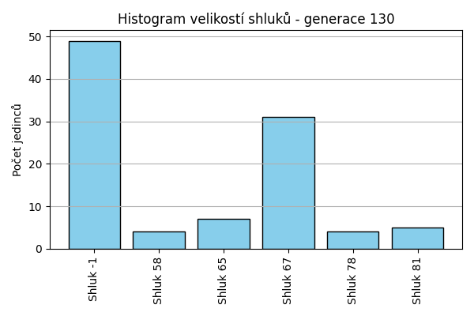
Stabilita mezi generací 129 → 130:
Shluk -1 → 67: 16 jedinců (32.7 %)
Shluk -1 → -1: 32 jedinců (65.3 %)
Shluk -1 → 81: 1 jedinců (2.0 %)
Shluk 79 → -1: 4 jedinců (100.0 %)
Shluk 65 → 65: 6 jedinců (100.0 %)
Shluk 67 → 67: 9 jedinců (100.0 %)
Shluk 76 → -1: 4 jedinců (100.0 %)
Shluk 77 → -1: 4 jedinců (100.0 %)
Shluk 80 → -1: 4 jedinců (100.0 %)
Shluk 81 → 81: 4 jedinců (66.7 %)
Shluk 81 → -1: 1 jedinců (16.7 %)
Shluk 81 → 65: 1 jedinců (16.7 %)
Shluk 58 → 58: 4 jedinců (100.0 %)
Shluk 82 → 67: 6 jedinců (100.0 %)
Shluk 78 → 78: 4 jedinců (100.0 %)
Jaccardovo mapování a overlap: Generace 129 → 130
- Shluk 79 → žádný vhodný přechod
- Shluk 65 → 65 (Jaccard: 0.86, Overlap: 1.00)
- Shluk 67 → 67 (Jaccard: 0.29, Overlap: 1.00)
- Shluk 76 → žádný vhodný přechod
- Shluk 77 → žádný vhodný přechod
- Shluk 80 → žádný vhodný přechod
- Shluk 81 → 81 (Jaccard: 0.57, Overlap: 0.80)
- Shluk 58 → 58 (Jaccard: 1.00, Overlap: 1.00)
- Shluk 82 → 67 (Jaccard: 0.19, Overlap: 1.00)
- Shluk 78 → 78 (Jaccard: 1.00, Overlap: 1.00)
Posun centroidů mezi generací 129 → 130:
- Shluk 0: 44.0972
- Shluk 1: 733.0947
- Shluk 2: 841.3824
- Shluk 3: 1023.9803
- Shluk 4: 935.8677
Generace 131
Stabilita mezi generací 130 → 131:
Shluk 67 → 67: 31 jedinců (100.0 %)
Shluk -1 → -1: 44 jedinců (89.8 %)
Shluk -1 → 67: 3 jedinců (6.1 %)
Shluk -1 → 58: 1 jedinců (2.0 %)
Shluk -1 → 78: 1 jedinců (2.0 %)
Shluk 65 → 65: 5 jedinců (71.4 %)
Shluk 65 → -1: 1 jedinců (14.3 %)
Shluk 65 → 67: 1 jedinců (14.3 %)
Shluk 81 → 81: 5 jedinců (100.0 %)
Shluk 58 → 58: 3 jedinců (75.0 %)
Shluk 58 → -1: 1 jedinců (25.0 %)
Shluk 78 → 78: 4 jedinců (100.0 %)
Jaccardovo mapování a overlap: Generace 130 → 131
- Shluk 67 → 67 (Jaccard: 0.89, Overlap: 1.00)
- Shluk 65 → 65 (Jaccard: 0.71, Overlap: 1.00)
- Shluk 81 → 81 (Jaccard: 1.00, Overlap: 1.00)
- Shluk 58 → 58 (Jaccard: 0.60, Overlap: 0.75)
- Shluk 78 → 78 (Jaccard: 0.80, Overlap: 1.00)
Posun centroidů mezi generací 130 → 131:
- Shluk 0: 9.7661
- Shluk 1: 23.6471
- Shluk 2: 940.4180
- Shluk 3: 952.8335
- Shluk 4: 30.8138
Generace 132
Stabilita mezi generací 131 → 132:
Shluk 67 → 67: 34 jedinců (97.1 %)
Shluk 67 → -1: 1 jedinců (2.9 %)
Shluk -1 → 67: 26 jedinců (56.5 %)
Shluk -1 → -1: 17 jedinců (37.0 %)
Shluk -1 → 58: 3 jedinců (6.5 %)
Shluk 65 → 67: 1 jedinců (20.0 %)
Shluk 65 → -1: 4 jedinců (80.0 %)
Shluk 58 → 58: 4 jedinců (100.0 %)
Shluk 81 → -1: 5 jedinců (100.0 %)
Shluk 78 → -1: 5 jedinců (100.0 %)
Jaccardovo mapování a overlap: Generace 131 → 132
- Shluk 67 → 67 (Jaccard: 0.55, Overlap: 0.97)
- Shluk 65 → 67 (Jaccard: 0.02, Overlap: 0.20)
- Shluk 58 → 58 (Jaccard: 0.57, Overlap: 1.00)
- Shluk 81 → žádný vhodný přechod
- Shluk 78 → žádný vhodný přechod
Posun centroidů mezi generací 131 → 132:
- Shluk 0: 58.8915
- Shluk 1: 67.9173
Generace 133
Stabilita mezi generací 132 → 133:
Shluk 67 → 67: 36 jedinců (59.0 %)
Shluk 67 → -1: 24 jedinců (39.3 %)
Shluk 67 → 83: 1 jedinců (1.6 %)
Shluk -1 → 83: 3 jedinců (9.4 %)
Shluk -1 → -1: 22 jedinců (68.8 %)
Shluk -1 → 84: 5 jedinců (15.6 %)
Shluk -1 → 58: 2 jedinců (6.2 %)
Shluk 58 → 58: 7 jedinců (100.0 %)
Jaccardovo mapování a overlap: Generace 132 → 133
- Shluk 67 → 67 (Jaccard: 0.59, Overlap: 1.00)
- Shluk 58 → 58 (Jaccard: 0.78, Overlap: 1.00)
Posun centroidů mezi generací 132 → 133:
- Shluk 0: 63.6700
- Shluk 1: 1000.3411
Generace 134
Stabilita mezi generací 133 → 134:
Shluk 67 → 67: 36 jedinců (100.0 %)
Shluk -1 → 67: 24 jedinců (52.2 %)
Shluk -1 → -1: 22 jedinců (47.8 %)
Shluk 83 → -1: 4 jedinců (100.0 %)
Shluk 58 → 58: 6 jedinců (66.7 %)
Shluk 58 → -1: 3 jedinců (33.3 %)
Shluk 84 → -1: 4 jedinců (80.0 %)
Shluk 84 → 67: 1 jedinců (20.0 %)
Jaccardovo mapování a overlap: Generace 133 → 134
- Shluk 67 → 67 (Jaccard: 0.59, Overlap: 1.00)
- Shluk 83 → žádný vhodný přechod
- Shluk 58 → 58 (Jaccard: 0.67, Overlap: 1.00)
- Shluk 84 → 67 (Jaccard: 0.02, Overlap: 0.20)
Posun centroidů mezi generací 133 → 134:
- Shluk 0: 53.8861
- Shluk 1: 1005.1108
Generace 135
Stabilita mezi generací 134 → 135:
Shluk 67 → 67: 41 jedinců (67.2 %)
Shluk 67 → -1: 19 jedinců (31.1 %)
Shluk 67 → 85: 1 jedinců (1.6 %)
Shluk -1 → -1: 27 jedinců (81.8 %)
Shluk -1 → 85: 4 jedinců (12.1 %)
Shluk -1 → 67: 1 jedinců (3.0 %)
Shluk -1 → 58: 1 jedinců (3.0 %)
Shluk 58 → 58: 6 jedinců (100.0 %)
Jaccardovo mapování a overlap: Generace 134 → 135
- Shluk 67 → 67 (Jaccard: 0.66, Overlap: 0.98)
- Shluk 58 → 58 (Jaccard: 0.86, Overlap: 1.00)
Posun centroidů mezi generací 134 → 135:
- Shluk 0: 47.7541
- Shluk 1: 26.3718
Generace 136
Stabilita mezi generací 135 → 136:
Shluk 67 → 67: 42 jedinců (100.0 %)
Shluk -1 → -1: 39 jedinců (84.8 %)
Shluk -1 → 58: 1 jedinců (2.2 %)
Shluk -1 → 86: 4 jedinců (8.7 %)
Shluk -1 → 67: 2 jedinců (4.3 %)
Shluk 58 → 58: 4 jedinců (57.1 %)
Shluk 58 → -1: 3 jedinců (42.9 %)
Shluk 85 → -1: 4 jedinců (80.0 %)
Shluk 85 → 67: 1 jedinců (20.0 %)
Jaccardovo mapování a overlap: Generace 135 → 136
- Shluk 67 → 67 (Jaccard: 0.93, Overlap: 1.00)
- Shluk 58 → 58 (Jaccard: 0.50, Overlap: 0.80)
- Shluk 85 → 67 (Jaccard: 0.02, Overlap: 0.20)
Posun centroidů mezi generací 135 → 136:
- Shluk 0: 4.3269
- Shluk 1: 46.4388
- Shluk 2: 1028.7269
Generace 137
Stabilita mezi generací 136 → 137:
Shluk 67 → 67: 43 jedinců (95.6 %)
Shluk 67 → -1: 2 jedinců (4.4 %)
Shluk -1 → -1: 42 jedinců (91.3 %)
Shluk -1 → 67: 2 jedinců (4.3 %)
Shluk -1 → 58: 2 jedinců (4.3 %)
Shluk 58 → 67: 2 jedinců (40.0 %)
Shluk 58 → 58: 3 jedinců (60.0 %)
Shluk 86 → -1: 3 jedinců (75.0 %)
Shluk 86 → 67: 1 jedinců (25.0 %)
Jaccardovo mapování a overlap: Generace 136 → 137
- Shluk 67 → 67 (Jaccard: 0.86, Overlap: 0.96)
- Shluk 58 → 58 (Jaccard: 0.43, Overlap: 0.60)
- Shluk 86 → 67 (Jaccard: 0.02, Overlap: 0.25)
Posun centroidů mezi generací 136 → 137:
- Shluk 0: 5.7902
- Shluk 1: 27.8511
Generace 138
Stabilita mezi generací 137 → 138:
Shluk 67 → 67: 47 jedinců (97.9 %)
Shluk 67 → 87: 1 jedinců (2.1 %)
Shluk -1 → 87: 7 jedinců (14.9 %)
Shluk -1 → -1: 37 jedinců (78.7 %)
Shluk -1 → 67: 3 jedinců (6.4 %)
Shluk 58 → 58: 4 jedinců (80.0 %)
Shluk 58 → 67: 1 jedinců (20.0 %)
Jaccardovo mapování a overlap: Generace 137 → 138
- Shluk 67 → 67 (Jaccard: 0.90, Overlap: 0.98)
- Shluk 58 → 58 (Jaccard: 0.80, Overlap: 1.00)
Posun centroidů mezi generací 137 → 138:
- Shluk 0: 5.0467
- Shluk 1: 501.7436
Generace 139
Stabilita mezi generací 138 → 139:
Shluk 67 → 67: 49 jedinců (96.1 %)
Shluk 67 → -1: 2 jedinců (3.9 %)
Shluk 87 → 87: 4 jedinců (50.0 %)
Shluk 87 → 58: 2 jedinců (25.0 %)
Shluk 87 → -1: 2 jedinců (25.0 %)
Shluk -1 → 88: 3 jedinců (8.1 %)
Shluk -1 → -1: 29 jedinců (78.4 %)
Shluk -1 → 67: 5 jedinců (13.5 %)
Shluk 58 → 58: 3 jedinců (75.0 %)
Shluk 58 → 88: 1 jedinců (25.0 %)
Jaccardovo mapování a overlap: Generace 138 → 139
- Shluk 67 → 67 (Jaccard: 0.88, Overlap: 0.96)
- Shluk 87 → 87 (Jaccard: 0.50, Overlap: 1.00)
- Shluk 58 → 58 (Jaccard: 0.50, Overlap: 0.75)
Posun centroidů mezi generací 138 → 139:
- Shluk 0: 4.7282
- Shluk 1: 25.9102
- Shluk 2: 1018.3753
Generace 140
Stabilita mezi generací 139 → 140:
Shluk 67 → 67: 52 jedinců (96.3 %)
Shluk 67 → 58: 1 jedinců (1.9 %)
Shluk 67 → 88: 1 jedinců (1.9 %)
Shluk 87 → 67: 1 jedinců (25.0 %)
Shluk 87 → 87: 3 jedinců (75.0 %)
Shluk 88 → 88: 4 jedinců (100.0 %)
Shluk 58 → 58: 5 jedinců (100.0 %)
Shluk -1 → 87: 3 jedinců (9.1 %)
Shluk -1 → -1: 24 jedinců (72.7 %)
Shluk -1 → 67: 2 jedinců (6.1 %)
Shluk -1 → 89: 4 jedinců (12.1 %)
Jaccardovo mapování a overlap: Generace 139 → 140
- Shluk 67 → 67 (Jaccard: 0.91, Overlap: 0.96)
- Shluk 87 → 87 (Jaccard: 0.43, Overlap: 0.75)
- Shluk 88 → 88 (Jaccard: 0.80, Overlap: 1.00)
- Shluk 58 → 58 (Jaccard: 0.83, Overlap: 1.00)
Posun centroidů mezi generací 139 → 140:
- Shluk 0: 4.1482
- Shluk 1: 24.4080
- Shluk 2: 12.8586
- Shluk 3: 12.8198
Generace 141
Stabilita mezi generací 140 → 141:
Shluk 67 → 67: 52 jedinců (94.5 %)
Shluk 67 → -1: 2 jedinců (3.6 %)
Shluk 67 → 87: 1 jedinců (1.8 %)
Shluk 88 → 67: 1 jedinců (20.0 %)
Shluk 88 → 88: 4 jedinců (80.0 %)
Shluk 58 → 58: 5 jedinců (83.3 %)
Shluk 58 → -1: 1 jedinců (16.7 %)
Shluk 87 → 87: 6 jedinců (100.0 %)
Shluk -1 → -1: 18 jedinců (75.0 %)
Shluk -1 → 67: 3 jedinců (12.5 %)
Shluk -1 → 87: 2 jedinců (8.3 %)
Shluk -1 → 58: 1 jedinců (4.2 %)
Shluk 89 → -1: 4 jedinců (100.0 %)
Jaccardovo mapování a overlap: Generace 140 → 141
- Shluk 67 → 67 (Jaccard: 0.88, Overlap: 0.95)
- Shluk 88 → 88 (Jaccard: 0.80, Overlap: 1.00)
- Shluk 58 → 58 (Jaccard: 0.71, Overlap: 0.83)
- Shluk 87 → 87 (Jaccard: 0.67, Overlap: 1.00)
- Shluk 89 → žádný vhodný přechod
Posun centroidů mezi generací 140 → 141:
- Shluk 0: 5.5457
- Shluk 1: 500.4390
- Shluk 2: 750.3224
- Shluk 3: 1020.6030
Generace 142
Stabilita mezi generací 141 → 142:
Shluk 67 → -1: 9 jedinců (16.1 %)
Shluk 67 → 67: 47 jedinců (83.9 %)
Shluk -1 → -1: 24 jedinců (96.0 %)
Shluk -1 → 67: 1 jedinců (4.0 %)
Shluk 58 → -1: 5 jedinců (83.3 %)
Shluk 58 → 67: 1 jedinců (16.7 %)
Shluk 87 → 67: 4 jedinců (44.4 %)
Shluk 87 → -1: 5 jedinců (55.6 %)
Shluk 88 → -1: 4 jedinců (100.0 %)
Jaccardovo mapování a overlap: Generace 141 → 142
- Shluk 67 → 67 (Jaccard: 0.76, Overlap: 0.89)
- Shluk 58 → 67 (Jaccard: 0.02, Overlap: 0.17)
- Shluk 87 → 67 (Jaccard: 0.07, Overlap: 0.44)
- Shluk 88 → žádný vhodný přechod
Posun centroidů mezi generací 141 → 142:
- Shluk 0: 6.0396
Generace 143
Stabilita mezi generací 142 → 143:
Shluk -1 → 67: 10 jedinců (21.3 %)
Shluk -1 → -1: 37 jedinců (78.7 %)
Shluk 67 → 67: 47 jedinců (88.7 %)
Shluk 67 → -1: 6 jedinců (11.3 %)
Jaccardovo mapování a overlap: Generace 142 → 143
- Shluk 67 → 67 (Jaccard: 0.75, Overlap: 0.89)
Posun centroidů mezi generací 142 → 143:
- Shluk 0: 5.5706
Generace 144
Stabilita mezi generací 143 → 144:
Shluk 67 → 67: 52 jedinců (91.2 %)
Shluk 67 → -1: 5 jedinců (8.8 %)
Shluk -1 → -1: 41 jedinců (95.3 %)
Shluk -1 → 67: 2 jedinců (4.7 %)
Jaccardovo mapování a overlap: Generace 143 → 144
- Shluk 67 → 67 (Jaccard: 0.88, Overlap: 0.96)
Posun centroidů mezi generací 143 → 144:
- Shluk 0: 3.2928
Generace 145
Stabilita mezi generací 144 → 145:
Shluk 67 → 67: 53 jedinců (98.1 %)
Shluk 67 → -1: 1 jedinců (1.9 %)
Shluk -1 → 67: 12 jedinců (26.1 %)
Shluk -1 → -1: 34 jedinců (73.9 %)
Jaccardovo mapování a overlap: Generace 144 → 145
- Shluk 67 → 67 (Jaccard: 0.80, Overlap: 0.98)
Posun centroidů mezi generací 144 → 145:
- Shluk 0: 4.1186
Generace 146
Stabilita mezi generací 145 → 146:
Shluk 67 → 67: 64 jedinců (98.5 %)
Shluk 67 → -1: 1 jedinců (1.5 %)
Shluk -1 → 67: 6 jedinců (17.1 %)
Shluk -1 → -1: 29 jedinců (82.9 %)
Jaccardovo mapování a overlap: Generace 145 → 146
- Shluk 67 → 67 (Jaccard: 0.90, Overlap: 0.98)
Posun centroidů mezi generací 145 → 146:
- Shluk 0: 4.2881
Generace 147
Stabilita mezi generací 146 → 147:
Shluk 67 → 67: 68 jedinců (97.1 %)
Shluk 67 → -1: 2 jedinců (2.9 %)
Shluk -1 → -1: 24 jedinců (80.0 %)
Shluk -1 → 67: 6 jedinců (20.0 %)
Jaccardovo mapování a overlap: Generace 146 → 147
- Shluk 67 → 67 (Jaccard: 0.89, Overlap: 0.97)
Posun centroidů mezi generací 146 → 147:
- Shluk 0: 3.5214
Generace 148
Stabilita mezi generací 147 → 148:
Shluk 67 → 67: 74 jedinců (100.0 %)
Shluk -1 → -1: 18 jedinců (69.2 %)
Shluk -1 → 67: 8 jedinců (30.8 %)
Jaccardovo mapování a overlap: Generace 147 → 148
- Shluk 67 → 67 (Jaccard: 0.90, Overlap: 1.00)
Posun centroidů mezi generací 147 → 148:
- Shluk 0: 4.2369
Generace 149

Stabilita mezi generací 148 → 149:
Shluk 67 → 67: 81 jedinců (98.8 %)
Shluk 67 → -1: 1 jedinců (1.2 %)
Shluk -1 → 67: 8 jedinců (44.4 %)
Shluk -1 → -1: 10 jedinců (55.6 %)
Jaccardovo mapování a overlap: Generace 148 → 149
- Shluk 67 → 67 (Jaccard: 0.90, Overlap: 0.99)
Posun centroidů mezi generací 148 → 149:
- Shluk 0: 5.4218
Generace 150
Stabilita mezi generací 149 → 150:
Shluk 67 → 67: 89 jedinců (100.0 %)
Shluk -1 → 67: 4 jedinců (36.4 %)
Shluk -1 → -1: 7 jedinců (63.6 %)
Jaccardovo mapování a overlap: Generace 149 → 150
- Shluk 67 → 67 (Jaccard: 0.96, Overlap: 1.00)
Posun centroidů mezi generací 149 → 150:
- Shluk 0: 4.5223
Generace 151
Stabilita mezi generací 150 → 151:
Shluk 67 → 67: 93 jedinců (100.0 %)
Shluk -1 → 67: 3 jedinců (42.9 %)
Shluk -1 → -1: 4 jedinců (57.1 %)
Jaccardovo mapování a overlap: Generace 150 → 151
- Shluk 67 → 67 (Jaccard: 0.97, Overlap: 1.00)
Posun centroidů mezi generací 150 → 151:
- Shluk 0: 4.5790
Generace 152
Stabilita mezi generací 151 → 152:
Shluk 67 → -1: 22 jedinců (22.9 %)
Shluk 67 → 67: 74 jedinců (77.1 %)
Shluk -1 → 67: 3 jedinců (75.0 %)
Shluk -1 → -1: 1 jedinců (25.0 %)
Jaccardovo mapování a overlap: Generace 151 → 152
- Shluk 67 → 67 (Jaccard: 0.75, Overlap: 0.96)
Posun centroidů mezi generací 151 → 152:
- Shluk 0: 4.9009
Generace 153
Stabilita mezi generací 152 → 153:
Shluk -1 → 67: 16 jedinců (69.6 %)
Shluk -1 → -1: 7 jedinců (30.4 %)
Shluk 67 → 67: 72 jedinců (93.5 %)
Shluk 67 → -1: 5 jedinců (6.5 %)
Jaccardovo mapování a overlap: Generace 152 → 153
- Shluk 67 → 67 (Jaccard: 0.77, Overlap: 0.94)
Posun centroidů mezi generací 152 → 153:
- Shluk 0: 4.3980
Generace 154
Stabilita mezi generací 153 → 154:
Shluk 67 → 67: 75 jedinců (85.2 %)
Shluk 67 → -1: 13 jedinců (14.8 %)
Shluk -1 → 67: 8 jedinců (66.7 %)
Shluk -1 → -1: 4 jedinců (33.3 %)
Jaccardovo mapování a overlap: Generace 153 → 154
- Shluk 67 → 67 (Jaccard: 0.78, Overlap: 0.90)
Posun centroidů mezi generací 153 → 154:
- Shluk 0: 5.6937
Generace 155
Stabilita mezi generací 154 → 155:
Shluk 67 → -1: 11 jedinců (13.3 %)
Shluk 67 → 67: 72 jedinců (86.7 %)
Shluk -1 → 67: 10 jedinců (58.8 %)
Shluk -1 → -1: 7 jedinců (41.2 %)
Jaccardovo mapování a overlap: Generace 154 → 155
- Shluk 67 → 67 (Jaccard: 0.77, Overlap: 0.88)
Posun centroidů mezi generací 154 → 155:
- Shluk 0: 4.1137
Generace 156
Stabilita mezi generací 155 → 156:
Shluk -1 → -1: 11 jedinců (61.1 %)
Shluk -1 → 67: 7 jedinců (38.9 %)
Shluk 67 → -1: 23 jedinců (28.0 %)
Shluk 67 → 67: 59 jedinců (72.0 %)
Jaccardovo mapování a overlap: Generace 155 → 156
- Shluk 67 → 67 (Jaccard: 0.66, Overlap: 0.89)
Posun centroidů mezi generací 155 → 156:
- Shluk 0: 5.3914
Generace 157

Stabilita mezi generací 156 → 157:
Shluk -1 → -1: 24 jedinců (70.6 %)
Shluk -1 → 67: 10 jedinců (29.4 %)
Shluk 67 → -1: 13 jedinců (19.7 %)
Shluk 67 → 67: 53 jedinců (80.3 %)
Jaccardovo mapování a overlap: Generace 156 → 157
- Shluk 67 → 67 (Jaccard: 0.70, Overlap: 0.84)
Posun centroidů mezi generací 156 → 157:
- Shluk 0: 2.3911
Generace 158
Stabilita mezi generací 157 → 158:
Shluk -1 → -1: 27 jedinců (73.0 %)
Shluk -1 → 67: 10 jedinců (27.0 %)
Shluk 67 → -1: 13 jedinců (20.6 %)
Shluk 67 → 67: 50 jedinců (79.4 %)
Jaccardovo mapování a overlap: Generace 157 → 158
- Shluk 67 → 67 (Jaccard: 0.68, Overlap: 0.83)
Posun centroidů mezi generací 157 → 158:
- Shluk 0: 3.1817
Generace 159
Stabilita mezi generací 158 → 159:
Shluk -1 → -1: 16 jedinců (40.0 %)
Shluk -1 → 67: 24 jedinců (60.0 %)
Shluk 67 → 67: 59 jedinců (98.3 %)
Shluk 67 → -1: 1 jedinců (1.7 %)
Jaccardovo mapování a overlap: Generace 158 → 159
- Shluk 67 → 67 (Jaccard: 0.70, Overlap: 0.98)
Posun centroidů mezi generací 158 → 159:
- Shluk 0: 2.2346
Generace 160
Stabilita mezi generací 159 → 160:
Shluk -1 → 67: 8 jedinců (47.1 %)
Shluk -1 → -1: 9 jedinců (52.9 %)
Shluk 67 → 67: 67 jedinců (80.7 %)
Shluk 67 → -1: 12 jedinců (14.5 %)
Shluk 67 → 90: 4 jedinců (4.8 %)
Jaccardovo mapování a overlap: Generace 159 → 160
- Shluk 67 → 67 (Jaccard: 0.74, Overlap: 0.89)
Posun centroidů mezi generací 159 → 160:
- Shluk 0: 2.8162
Generace 161
Stabilita mezi generací 160 → 161:
Shluk 67 → -1: 5 jedinců (6.7 %)
Shluk 67 → 67: 70 jedinců (93.3 %)
Shluk -1 → -1: 12 jedinců (57.1 %)
Shluk -1 → 67: 9 jedinců (42.9 %)
Shluk 90 → 67: 3 jedinců (75.0 %)
Shluk 90 → -1: 1 jedinců (25.0 %)
Jaccardovo mapování a overlap: Generace 160 → 161
- Shluk 67 → 67 (Jaccard: 0.80, Overlap: 0.93)
- Shluk 90 → 67 (Jaccard: 0.04, Overlap: 0.75)
Posun centroidů mezi generací 160 → 161:
- Shluk 0: 4.3957
Generace 162
Stabilita mezi generací 161 → 162:
Shluk -1 → -1: 11 jedinců (61.1 %)
Shluk -1 → 67: 7 jedinců (38.9 %)
Shluk 67 → 67: 52 jedinců (63.4 %)
Shluk 67 → -1: 30 jedinců (36.6 %)
Jaccardovo mapování a overlap: Generace 161 → 162
- Shluk 67 → 67 (Jaccard: 0.58, Overlap: 0.88)
Posun centroidů mezi generací 161 → 162:
- Shluk 0: 2.9596
Generace 163
Stabilita mezi generací 162 → 163:
Shluk -1 → 67: 14 jedinců (34.1 %)
Shluk -1 → -1: 27 jedinců (65.9 %)
Shluk 67 → 67: 56 jedinců (94.9 %)
Shluk 67 → -1: 3 jedinců (5.1 %)
Jaccardovo mapování a overlap: Generace 162 → 163
- Shluk 67 → 67 (Jaccard: 0.77, Overlap: 0.95)
Posun centroidů mezi generací 162 → 163:
- Shluk 0: 3.4251
Generace 164
Stabilita mezi generací 163 → 164:
Shluk 67 → 67: 51 jedinců (72.9 %)
Shluk 67 → -1: 19 jedinců (27.1 %)
Shluk -1 → 67: 7 jedinců (23.3 %)
Shluk -1 → -1: 23 jedinců (76.7 %)
Jaccardovo mapování a overlap: Generace 163 → 164
- Shluk 67 → 67 (Jaccard: 0.66, Overlap: 0.88)
Posun centroidů mezi generací 163 → 164:
- Shluk 0: 2.2335
Generace 165
Stabilita mezi generací 164 → 165:
Shluk 67 → 91: 7 jedinců (12.1 %)
Shluk 67 → -1: 8 jedinců (13.8 %)
Shluk 67 → 67: 43 jedinců (74.1 %)
Shluk -1 → -1: 34 jedinců (81.0 %)
Shluk -1 → 67: 7 jedinců (16.7 %)
Shluk -1 → 91: 1 jedinců (2.4 %)
Jaccardovo mapování a overlap: Generace 164 → 165
- Shluk 67 → 67 (Jaccard: 0.66, Overlap: 0.86)
Posun centroidů mezi generací 164 → 165:
- Shluk 0: 15.6690
Generace 166
Stabilita mezi generací 165 → 166:
Shluk 91 → 67: 6 jedinců (75.0 %)
Shluk 91 → -1: 2 jedinců (25.0 %)
Shluk -1 → -1: 30 jedinců (71.4 %)
Shluk -1 → 67: 12 jedinců (28.6 %)
Shluk 67 → -1: 3 jedinců (6.0 %)
Shluk 67 → 67: 47 jedinců (94.0 %)
Jaccardovo mapování a overlap: Generace 165 → 166
- Shluk 91 → 67 (Jaccard: 0.09, Overlap: 0.75)
- Shluk 67 → 67 (Jaccard: 0.69, Overlap: 0.94)
Posun centroidů mezi generací 165 → 166:
- Shluk 0: 18.1719
Generace 167
Stabilita mezi generací 166 → 167:
Shluk 67 → 67: 59 jedinců (90.8 %)
Shluk 67 → -1: 6 jedinců (9.2 %)
Shluk -1 → 67: 20 jedinců (57.1 %)
Shluk -1 → -1: 15 jedinců (42.9 %)
Jaccardovo mapování a overlap: Generace 166 → 167
- Shluk 67 → 67 (Jaccard: 0.69, Overlap: 0.91)
Posun centroidů mezi generací 166 → 167:
- Shluk 0: 2.6537
Generace 168
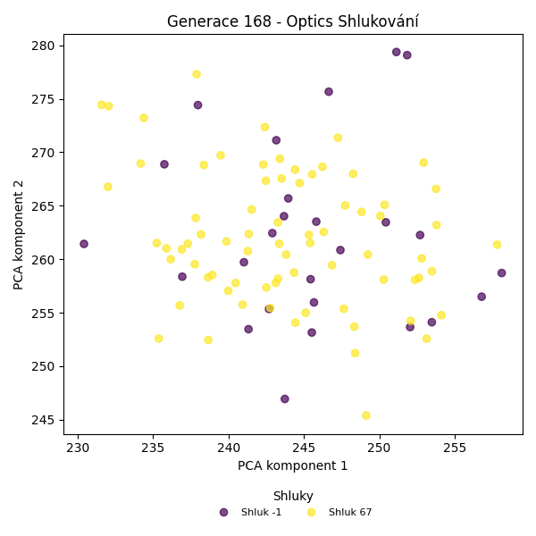
Stabilita mezi generací 167 → 168:
Shluk 67 → -1: 11 jedinců (13.9 %)
Shluk 67 → 67: 68 jedinců (86.1 %)
Shluk -1 → -1: 15 jedinců (71.4 %)
Shluk -1 → 67: 6 jedinců (28.6 %)
Jaccardovo mapování a overlap: Generace 167 → 168
- Shluk 67 → 67 (Jaccard: 0.80, Overlap: 0.92)
Posun centroidů mezi generací 167 → 168:
- Shluk 0: 2.4525
Generace 169
Stabilita mezi generací 168 → 169:
Shluk -1 → 67: 12 jedinců (46.2 %)
Shluk -1 → -1: 14 jedinců (53.8 %)
Shluk 67 → 67: 69 jedinců (93.2 %)
Shluk 67 → -1: 5 jedinců (6.8 %)
Jaccardovo mapování a overlap: Generace 168 → 169
- Shluk 67 → 67 (Jaccard: 0.80, Overlap: 0.93)
Posun centroidů mezi generací 168 → 169:
- Shluk 0: 1.0155
Generace 170
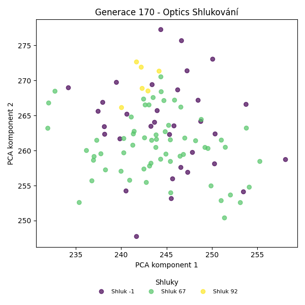
Stabilita mezi generací 169 → 170:
Shluk 67 → 67: 58 jedinců (71.6 %)
Shluk 67 → -1: 18 jedinců (22.2 %)
Shluk 67 → 92: 5 jedinců (6.2 %)
Shluk -1 → -1: 15 jedinců (78.9 %)
Shluk -1 → 67: 3 jedinců (15.8 %)
Shluk -1 → 92: 1 jedinců (5.3 %)
Jaccardovo mapování a overlap: Generace 169 → 170
- Shluk 67 → 67 (Jaccard: 0.69, Overlap: 0.95)
Posun centroidů mezi generací 169 → 170:
- Shluk 0: 2.1123
Generace 171
Stabilita mezi generací 170 → 171:
Shluk 67 → 67: 58 jedinců (95.1 %)
Shluk 67 → -1: 3 jedinců (4.9 %)
Shluk -1 → 67: 21 jedinců (63.6 %)
Shluk -1 → -1: 12 jedinců (36.4 %)
Shluk 92 → 67: 6 jedinců (100.0 %)
Jaccardovo mapování a overlap: Generace 170 → 171
- Shluk 67 → 67 (Jaccard: 0.66, Overlap: 0.95)
- Shluk 92 → 67 (Jaccard: 0.07, Overlap: 1.00)
Posun centroidů mezi generací 170 → 171:
- Shluk 0: 2.8773
Generace 172
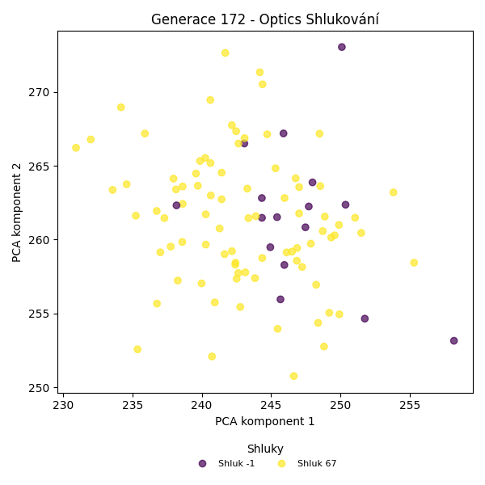
Stabilita mezi generací 171 → 172:
Shluk 67 → -1: 6 jedinců (7.1 %)
Shluk 67 → 67: 79 jedinců (92.9 %)
Shluk -1 → -1: 10 jedinců (66.7 %)
Shluk -1 → 67: 5 jedinců (33.3 %)
Jaccardovo mapování a overlap: Generace 171 → 172
- Shluk 67 → 67 (Jaccard: 0.88, Overlap: 0.94)
Posun centroidů mezi generací 171 → 172:
- Shluk 0: 1.6926
Generace 173
Stabilita mezi generací 172 → 173:
Shluk -1 → 67: 8 jedinců (50.0 %)
Shluk -1 → -1: 8 jedinců (50.0 %)
Shluk 67 → 67: 81 jedinců (96.4 %)
Shluk 67 → -1: 3 jedinců (3.6 %)
Jaccardovo mapování a overlap: Generace 172 → 173
- Shluk 67 → 67 (Jaccard: 0.88, Overlap: 0.96)
Posun centroidů mezi generací 172 → 173:
- Shluk 0: 1.0883
Generace 174
Stabilita mezi generací 173 → 174:
Shluk 67 → -1: 22 jedinců (24.7 %)
Shluk 67 → 67: 67 jedinců (75.3 %)
Shluk -1 → -1: 5 jedinců (45.5 %)
Shluk -1 → 67: 6 jedinců (54.5 %)
Jaccardovo mapování a overlap: Generace 173 → 174
- Shluk 67 → 67 (Jaccard: 0.71, Overlap: 0.92)
Posun centroidů mezi generací 173 → 174:
- Shluk 0: 2.0823
Generace 175
Stabilita mezi generací 174 → 175:
Shluk -1 → 67: 5 jedinců (18.5 %)
Shluk -1 → -1: 20 jedinců (74.1 %)
Shluk -1 → 93: 2 jedinců (7.4 %)
Shluk 67 → 67: 56 jedinců (76.7 %)
Shluk 67 → -1: 13 jedinců (17.8 %)
Shluk 67 → 93: 4 jedinců (5.5 %)
Jaccardovo mapování a overlap: Generace 174 → 175
- Shluk 67 → 67 (Jaccard: 0.72, Overlap: 0.92)
Posun centroidů mezi generací 174 → 175:
- Shluk 0: 1.4156
Generace 176

Stabilita mezi generací 175 → 176:
Shluk 67 → 67: 51 jedinců (83.6 %)
Shluk 67 → -1: 10 jedinců (16.4 %)
Shluk -1 → -1: 23 jedinců (69.7 %)
Shluk -1 → 67: 10 jedinců (30.3 %)
Shluk 93 → 67: 4 jedinců (66.7 %)
Shluk 93 → -1: 2 jedinců (33.3 %)
Jaccardovo mapování a overlap: Generace 175 → 176
- Shluk 67 → 67 (Jaccard: 0.68, Overlap: 0.84)
- Shluk 93 → 67 (Jaccard: 0.06, Overlap: 0.67)
Posun centroidů mezi generací 175 → 176:
- Shluk 0: 1.4716
Generace 177
Stabilita mezi generací 176 → 177:
Shluk 67 → 67: 62 jedinců (95.4 %)
Shluk 67 → -1: 3 jedinců (4.6 %)
Shluk -1 → 67: 18 jedinců (51.4 %)
Shluk -1 → -1: 17 jedinců (48.6 %)
Jaccardovo mapování a overlap: Generace 176 → 177
- Shluk 67 → 67 (Jaccard: 0.75, Overlap: 0.95)
Posun centroidů mezi generací 176 → 177:
- Shluk 0: 1.7928
Generace 178
Stabilita mezi generací 177 → 178:
Shluk 67 → -1: 77 jedinců (96.2 %)
Shluk 67 → 67: 3 jedinců (3.8 %)
Shluk -1 → -1: 19 jedinců (95.0 %)
Shluk -1 → 67: 1 jedinců (5.0 %)
Jaccardovo mapování a overlap: Generace 177 → 178
- Shluk 67 → 67 (Jaccard: 0.04, Overlap: 0.75)
Posun centroidů mezi generací 177 → 178:
- Shluk 0: 7.6420
Generace 179

Stabilita mezi generací 178 → 179:
Shluk -1 → -1: 95 jedinců (99.0 %)
Shluk -1 → 67: 1 jedinců (1.0 %)
Shluk 67 → 67: 4 jedinců (100.0 %)
Jaccardovo mapování a overlap: Generace 178 → 179
- Shluk 67 → 67 (Jaccard: 0.80, Overlap: 1.00)
Posun centroidů mezi generací 178 → 179:
- Shluk 0: 1.1332
Generace 180
Stabilita mezi generací 179 → 180:
Shluk -1 → 67: 55 jedinců (57.9 %)
Shluk -1 → -1: 40 jedinců (42.1 %)
Shluk 67 → 67: 5 jedinců (100.0 %)
Jaccardovo mapování a overlap: Generace 179 → 180
- Shluk 67 → 67 (Jaccard: 0.08, Overlap: 1.00)
Posun centroidů mezi generací 179 → 180:
- Shluk 0: 5.8763
Generace 181
Stabilita mezi generací 180 → 181:
Shluk 67 → -1: 5 jedinců (8.3 %)
Shluk 67 → 67: 55 jedinců (91.7 %)
Shluk -1 → 67: 20 jedinců (50.0 %)
Shluk -1 → -1: 20 jedinců (50.0 %)
Jaccardovo mapování a overlap: Generace 180 → 181
- Shluk 67 → 67 (Jaccard: 0.69, Overlap: 0.92)
Posun centroidů mezi generací 180 → 181:
- Shluk 0: 1.0985
Generace 182

Stabilita mezi generací 181 → 182:
Shluk -1 → -1: 19 jedinců (76.0 %)
Shluk -1 → 67: 6 jedinců (24.0 %)
Shluk 67 → -1: 28 jedinců (37.3 %)
Shluk 67 → 67: 47 jedinců (62.7 %)
Jaccardovo mapování a overlap: Generace 181 → 182
- Shluk 67 → 67 (Jaccard: 0.58, Overlap: 0.89)
Posun centroidů mezi generací 181 → 182:
- Shluk 0: 1.3085
Generace 183
Stabilita mezi generací 182 → 183:
Shluk -1 → 67: 13 jedinců (27.7 %)
Shluk -1 → -1: 34 jedinců (72.3 %)
Shluk 67 → 67: 45 jedinců (84.9 %)
Shluk 67 → -1: 8 jedinců (15.1 %)
Jaccardovo mapování a overlap: Generace 182 → 183
- Shluk 67 → 67 (Jaccard: 0.68, Overlap: 0.85)
Posun centroidů mezi generací 182 → 183:
- Shluk 0: 1.0779
Generace 184
Stabilita mezi generací 183 → 184:
Shluk 67 → 67: 55 jedinců (94.8 %)
Shluk 67 → -1: 3 jedinců (5.2 %)
Shluk -1 → -1: 27 jedinců (64.3 %)
Shluk -1 → 67: 15 jedinců (35.7 %)
Jaccardovo mapování a overlap: Generace 183 → 184
- Shluk 67 → 67 (Jaccard: 0.75, Overlap: 0.95)
Posun centroidů mezi generací 183 → 184:
- Shluk 0: 1.0174
Generace 185
Stabilita mezi generací 184 → 185:
Shluk 67 → 67: 67 jedinců (95.7 %)
Shluk 67 → -1: 3 jedinců (4.3 %)
Shluk -1 → 67: 17 jedinců (56.7 %)
Shluk -1 → -1: 13 jedinců (43.3 %)
Jaccardovo mapování a overlap: Generace 184 → 185
- Shluk 67 → 67 (Jaccard: 0.77, Overlap: 0.96)
Posun centroidů mezi generací 184 → 185:
- Shluk 0: 1.0893
Generace 186
Stabilita mezi generací 185 → 186:
Shluk 67 → 67: 73 jedinců (86.9 %)
Shluk 67 → -1: 11 jedinců (13.1 %)
Shluk -1 → 67: 7 jedinců (43.8 %)
Shluk -1 → -1: 9 jedinců (56.2 %)
Jaccardovo mapování a overlap: Generace 185 → 186
- Shluk 67 → 67 (Jaccard: 0.80, Overlap: 0.91)
Posun centroidů mezi generací 185 → 186:
- Shluk 0: 0.7307
Generace 187
Stabilita mezi generací 186 → 187:
Shluk 67 → 67: 75 jedinců (93.8 %)
Shluk 67 → -1: 5 jedinců (6.2 %)
Shluk -1 → 67: 8 jedinců (40.0 %)
Shluk -1 → -1: 12 jedinců (60.0 %)
Jaccardovo mapování a overlap: Generace 186 → 187
- Shluk 67 → 67 (Jaccard: 0.85, Overlap: 0.94)
Posun centroidů mezi generací 186 → 187:
- Shluk 0: 0.4569
Generace 188
Stabilita mezi generací 187 → 188:
Shluk 67 → 67: 69 jedinců (83.1 %)
Shluk 67 → -1: 14 jedinců (16.9 %)
Shluk -1 → -1: 9 jedinců (52.9 %)
Shluk -1 → 67: 8 jedinců (47.1 %)
Jaccardovo mapování a overlap: Generace 187 → 188
- Shluk 67 → 67 (Jaccard: 0.76, Overlap: 0.90)
Posun centroidů mezi generací 187 → 188:
- Shluk 0: 0.7295

Generace 189
Stabilita mezi generací 188 → 189:
Shluk 67 → 67: 75 jedinců (97.4 %)
Shluk 67 → -1: 2 jedinců (2.6 %)
Shluk -1 → 67: 11 jedinců (47.8 %)
Shluk -1 → -1: 12 jedinců (52.2 %)
Jaccardovo mapování a overlap: Generace 188 → 189
- Shluk 67 → 67 (Jaccard: 0.85, Overlap: 0.97)
Posun centroidů mezi generací 188 → 189:
- Shluk 0: 0.8209
Generace 190
Stabilita mezi generací 189 → 190:
Shluk 67 → -1: 17 jedinců (19.8 %)
Shluk 67 → 67: 69 jedinců (80.2 %)
Shluk -1 → 67: 5 jedinců (35.7 %)
Shluk -1 → -1: 9 jedinců (64.3 %)
Jaccardovo mapování a overlap: Generace 189 → 190
- Shluk 67 → 67 (Jaccard: 0.76, Overlap: 0.93)
Posun centroidů mezi generací 189 → 190:
- Shluk 0: 0.7645

Generace 191
Stabilita mezi generací 190 → 191:
Shluk -1 → 67: 20 jedinců (76.9 %)
Shluk -1 → -1: 6 jedinců (23.1 %)
Shluk 67 → 67: 68 jedinců (91.9 %)
Shluk 67 → -1: 6 jedinců (8.1 %)
Jaccardovo mapování a overlap: Generace 190 → 191
- Shluk 67 → 67 (Jaccard: 0.72, Overlap: 0.92)
Posun centroidů mezi generací 190 → 191:
- Shluk 0: 0.5696
Generace 192
Stabilita mezi generací 191 → 192:
Shluk 67 → 67: 82 jedinců (93.2 %)
Shluk 67 → -1: 6 jedinců (6.8 %)
Shluk -1 → 67: 8 jedinců (66.7 %)
Shluk -1 → -1: 4 jedinců (33.3 %)
Jaccardovo mapování a overlap: Generace 191 → 192
- Shluk 67 → 67 (Jaccard: 0.85, Overlap: 0.93)
Posun centroidů mezi generací 191 → 192:
- Shluk 0: 0.3542
Generace 193
Stabilita mezi generací 192 → 193:
Shluk 67 → 67: 73 jedinců (81.1 %)
Shluk 67 → -1: 17 jedinců (18.9 %)
Shluk -1 → -1: 5 jedinců (50.0 %)
Shluk -1 → 67: 5 jedinců (50.0 %)
Jaccardovo mapování a overlap: Generace 192 → 193
- Shluk 67 → 67 (Jaccard: 0.77, Overlap: 0.94)
Posun centroidů mezi generací 192 → 193:
- Shluk 0: 0.5152
Generace 194
Stabilita mezi generací 193 → 194:
Shluk 67 → 67: 76 jedinců (97.4 %)
Shluk 67 → -1: 2 jedinců (2.6 %)
Shluk -1 → -1: 14 jedinců (63.6 %)
Shluk -1 → 67: 8 jedinců (36.4 %)
Jaccardovo mapování a overlap: Generace 193 → 194
- Shluk 67 → 67 (Jaccard: 0.88, Overlap: 0.97)
Posun centroidů mezi generací 193 → 194:
- Shluk 0: 0.4480

Generace 195
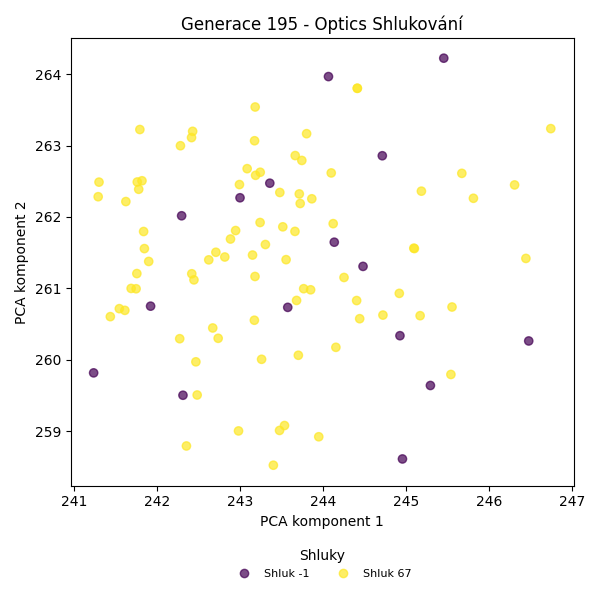
Stabilita mezi generací 194 → 195:
Shluk 67 → 67: 79 jedinců (94.0 %)
Shluk 67 → -1: 5 jedinců (6.0 %)
Shluk -1 → 67: 5 jedinců (31.2 %)
Shluk -1 → -1: 11 jedinců (68.8 %)
Jaccardovo mapování a overlap: Generace 194 → 195
- Shluk 67 → 67 (Jaccard: 0.89, Overlap: 0.94)
Posun centroidů mezi generací 194 → 195:
- Shluk 0: 0.2900

Generace 196

Stabilita mezi generací 195 → 196:
Shluk 67 → -1: 6 jedinců (7.1 %)
Shluk 67 → 67: 78 jedinců (92.9 %)
Shluk -1 → -1: 9 jedinců (56.2 %)
Shluk -1 → 67: 7 jedinců (43.8 %)
Jaccardovo mapování a overlap: Generace 195 → 196
- Shluk 67 → 67 (Jaccard: 0.86, Overlap: 0.93)
Posun centroidů mezi generací 195 → 196:
- Shluk 0: 0.4015
Generace 197

Stabilita mezi generací 196 → 197:
Shluk -1 → -1: 11 jedinců (73.3 %)
Shluk -1 → 67: 4 jedinců (26.7 %)
Shluk 67 → 67: 73 jedinců (85.9 %)
Shluk 67 → -1: 12 jedinců (14.1 %)
Jaccardovo mapování a overlap: Generace 196 → 197
- Shluk 67 → 67 (Jaccard: 0.82, Overlap: 0.95)
Posun centroidů mezi generací 196 → 197:
- Shluk 0: 0.4988
Generace 198
Stabilita mezi generací 197 → 198:
Shluk -1 → 67: 9 jedinců (39.1 %)
Shluk -1 → -1: 14 jedinců (60.9 %)
Shluk 67 → 67: 68 jedinců (88.3 %)
Shluk 67 → -1: 9 jedinců (11.7 %)
Jaccardovo mapování a overlap: Generace 197 → 198
- Shluk 67 → 67 (Jaccard: 0.79, Overlap: 0.88)
Posun centroidů mezi generací 197 → 198:
- Shluk 0: 0.2024
Generace 199
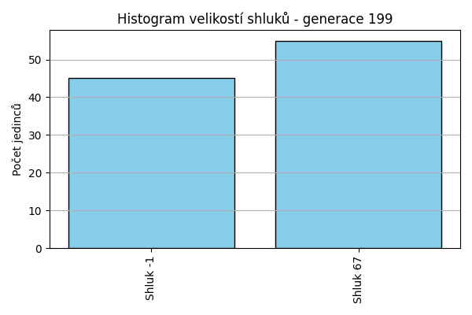
Stabilita mezi generací 198 → 199:
Shluk 67 → 67: 47 jedinců (61.0 %)
Shluk 67 → -1: 30 jedinců (39.0 %)
Shluk -1 → 67: 8 jedinců (34.8 %)
Shluk -1 → -1: 15 jedinců (65.2 %)
Jaccardovo mapování a overlap: Generace 198 → 199
- Shluk 67 → 67 (Jaccard: 0.55, Overlap: 0.85)
Posun centroidů mezi generací 198 → 199:
- Shluk 0: 0.4943
Generace 200
Stabilita mezi generací 199 → 200:
Shluk 67 → 67: 55 jedinců (100.0 %)
Shluk -1 → -1: 25 jedinců (55.6 %)
Shluk -1 → 67: 20 jedinců (44.4 %)
Jaccardovo mapování a overlap: Generace 199 → 200
- Shluk 67 → 67 (Jaccard: 0.73, Overlap: 1.00)
Posun centroidů mezi generací 199 → 200:
- Shluk 0: 0.3490
Generace 201
Stabilita mezi generací 200 → 201:
Shluk 67 → 67: 61 jedinců (81.3 %)
Shluk 67 → -1: 14 jedinců (18.7 %)
Shluk -1 → -1: 18 jedinců (72.0 %)
Shluk -1 → 67: 7 jedinců (28.0 %)
Jaccardovo mapování a overlap: Generace 200 → 201
- Shluk 67 → 67 (Jaccard: 0.74, Overlap: 0.90)
Posun centroidů mezi generací 200 → 201:
- Shluk 0: 0.2546
Generace 202
Stabilita mezi generací 201 → 202:
Shluk 67 → 67: 58 jedinců (85.3 %)
Shluk 67 → 94: 4 jedinců (5.9 %)
Shluk 67 → -1: 6 jedinců (8.8 %)
Shluk -1 → -1: 20 jedinců (62.5 %)
Shluk -1 → 67: 12 jedinců (37.5 %)
Jaccardovo mapování a overlap: Generace 201 → 202
- Shluk 67 → 67 (Jaccard: 0.72, Overlap: 0.85)
Posun centroidů mezi generací 201 → 202:
- Shluk 0: 0.5144
Generace 203
Stabilita mezi generací 202 → 203:
Shluk 67 → -1: 9 jedinců (12.9 %)
Shluk 67 → 67: 61 jedinců (87.1 %)
Shluk 94 → 67: 4 jedinců (100.0 %)
Shluk -1 → 67: 13 jedinců (50.0 %)
Shluk -1 → -1: 13 jedinců (50.0 %)
Jaccardovo mapování a overlap: Generace 202 → 203
- Shluk 67 → 67 (Jaccard: 0.70, Overlap: 0.87)
- Shluk 94 → 67 (Jaccard: 0.05, Overlap: 1.00)
Posun centroidů mezi generací 202 → 203:
- Shluk 0: 0.3112
Generace 204
Stabilita mezi generací 203 → 204:
Shluk -1 → -1: 17 jedinců (77.3 %)
Shluk -1 → 67: 5 jedinců (22.7 %)
Shluk 67 → -1: 26 jedinců (33.3 %)
Shluk 67 → 67: 38 jedinců (48.7 %)
Shluk 67 → 95: 14 jedinců (17.9 %)
Jaccardovo mapování a overlap: Generace 203 → 204
- Shluk 67 → 67 (Jaccard: 0.46, Overlap: 0.88)
Posun centroidů mezi generací 203 → 204:
- Shluk 0: 0.7146
Generace 205
Stabilita mezi generací 204 → 205:
Shluk -1 → 67: 14 jedinců (32.6 %)
Shluk -1 → -1: 29 jedinců (67.4 %)
Shluk 67 → 67: 38 jedinců (88.4 %)
Shluk 67 → -1: 5 jedinců (11.6 %)
Shluk 95 → 67: 9 jedinců (64.3 %)
Shluk 95 → -1: 5 jedinců (35.7 %)
Jaccardovo mapování a overlap: Generace 204 → 205
- Shluk 67 → 67 (Jaccard: 0.58, Overlap: 0.88)
- Shluk 95 → 67 (Jaccard: 0.14, Overlap: 0.64)
Posun centroidů mezi generací 204 → 205:
- Shluk 0: 0.4151
Generace 206
Stabilita mezi generací 205 → 206:
Shluk 67 → -1: 4 jedinců (6.6 %)
Shluk 67 → 67: 57 jedinců (93.4 %)
Shluk -1 → -1: 25 jedinců (64.1 %)
Shluk -1 → 67: 14 jedinců (35.9 %)
Jaccardovo mapování a overlap: Generace 205 → 206
- Shluk 67 → 67 (Jaccard: 0.76, Overlap: 0.93)
Posun centroidů mezi generací 205 → 206:
- Shluk 0: 0.1961
Generace 207
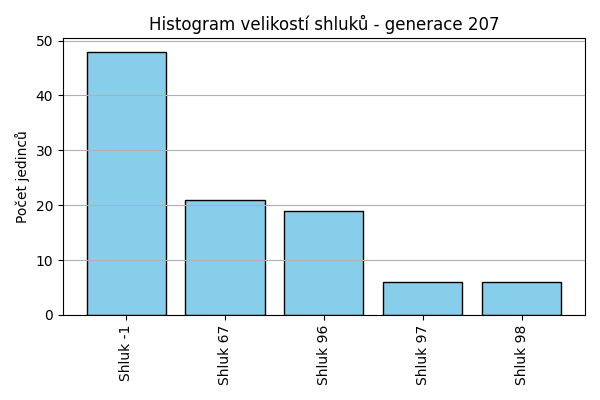
Stabilita mezi generací 206 → 207:
Shluk -1 → -1: 25 jedinců (86.2 %)
Shluk -1 → 67: 2 jedinců (6.9 %)
Shluk -1 → 96: 1 jedinců (3.4 %)
Shluk -1 → 98: 1 jedinců (3.4 %)
Shluk 67 → 96: 18 jedinců (25.4 %)
Shluk 67 → -1: 23 jedinců (32.4 %)
Shluk 67 → 67: 19 jedinců (26.8 %)
Shluk 67 → 97: 6 jedinců (8.5 %)
Shluk 67 → 98: 5 jedinců (7.0 %)
Jaccardovo mapování a overlap: Generace 206 → 207
- Shluk 67 → 67 (Jaccard: 0.26, Overlap: 0.90)
Posun centroidů mezi generací 206 → 207:
- Shluk 0: 0.9837
Generace 208
Stabilita mezi generací 207 → 208:
Shluk -1 → -1: 26 jedinců (54.2 %)
Shluk -1 → 67: 22 jedinců (45.8 %)
Shluk 96 → 67: 19 jedinců (100.0 %)
Shluk 67 → 67: 21 jedinců (100.0 %)
Shluk 97 → 67: 6 jedinců (100.0 %)
Shluk 98 → 67: 6 jedinců (100.0 %)
Jaccardovo mapování a overlap: Generace 207 → 208
- Shluk 96 → 67 (Jaccard: 0.26, Overlap: 1.00)
- Shluk 67 → 67 (Jaccard: 0.28, Overlap: 1.00)
- Shluk 97 → 67 (Jaccard: 0.08, Overlap: 1.00)
- Shluk 98 → 67 (Jaccard: 0.08, Overlap: 1.00)
Posun centroidů mezi generací 207 → 208:
- Shluk 0: 0.9996
Generace 209
Stabilita mezi generací 208 → 209:
Shluk -1 → 67: 11 jedinců (42.3 %)
Shluk -1 → -1: 15 jedinců (57.7 %)
Shluk 67 → 67: 68 jedinců (91.9 %)
Shluk 67 → -1: 6 jedinců (8.1 %)
Jaccardovo mapování a overlap: Generace 208 → 209
- Shluk 67 → 67 (Jaccard: 0.80, Overlap: 0.92)
Posun centroidů mezi generací 208 → 209:
- Shluk 0: 0.1243
Generace 210
Stabilita mezi generací 209 → 210:
Shluk 67 → 67: 60 jedinců (75.9 %)
Shluk 67 → -1: 19 jedinců (24.1 %)
Shluk -1 → -1: 11 jedinců (52.4 %)
Shluk -1 → 67: 10 jedinců (47.6 %)
Jaccardovo mapování a overlap: Generace 209 → 210
- Shluk 67 → 67 (Jaccard: 0.67, Overlap: 0.86)
Posun centroidů mezi generací 209 → 210:
- Shluk 0: 0.2535
Generace 211
Stabilita mezi generací 210 → 211:
Shluk 67 → 67: 67 jedinců (95.7 %)
Shluk 67 → -1: 3 jedinců (4.3 %)
Shluk -1 → -1: 22 jedinců (73.3 %)
Shluk -1 → 67: 8 jedinců (26.7 %)
Jaccardovo mapování a overlap: Generace 210 → 211
- Shluk 67 → 67 (Jaccard: 0.86, Overlap: 0.96)
Posun centroidů mezi generací 210 → 211:
- Shluk 0: 0.2286
Generace 212
Stabilita mezi generací 211 → 212:
Shluk 67 → 67: 74 jedinců (98.7 %)
Shluk 67 → -1: 1 jedinců (1.3 %)
Shluk -1 → 67: 15 jedinců (60.0 %)
Shluk -1 → -1: 10 jedinců (40.0 %)
Jaccardovo mapování a overlap: Generace 211 → 212
- Shluk 67 → 67 (Jaccard: 0.82, Overlap: 0.99)
Posun centroidů mezi generací 211 → 212:
- Shluk 0: 0.1794
Generace 213
Stabilita mezi generací 212 → 213:
Shluk 67 → 67: 72 jedinců (80.9 %)
Shluk 67 → -1: 17 jedinců (19.1 %)
Shluk -1 → -1: 7 jedinců (63.6 %)
Shluk -1 → 67: 4 jedinců (36.4 %)
Jaccardovo mapování a overlap: Generace 212 → 213
- Shluk 67 → 67 (Jaccard: 0.77, Overlap: 0.95)
Posun centroidů mezi generací 212 → 213:
- Shluk 0: 0.1403
Generace 214

Stabilita mezi generací 213 → 214:
Shluk 67 → 67: 61 jedinců (80.3 %)
Shluk 67 → -1: 15 jedinců (19.7 %)
Shluk -1 → 67: 10 jedinců (41.7 %)
Shluk -1 → -1: 14 jedinců (58.3 %)
Jaccardovo mapování a overlap: Generace 213 → 214
- Shluk 67 → 67 (Jaccard: 0.71, Overlap: 0.86)
Posun centroidů mezi generací 213 → 214:
- Shluk 0: 0.1771
Generace 215
Stabilita mezi generací 214 → 215:
Shluk 67 → 67: 66 jedinců (93.0 %)
Shluk 67 → -1: 5 jedinců (7.0 %)
Shluk -1 → 67: 16 jedinců (55.2 %)
Shluk -1 → -1: 13 jedinců (44.8 %)
Jaccardovo mapování a overlap: Generace 214 → 215
- Shluk 67 → 67 (Jaccard: 0.76, Overlap: 0.93)
Posun centroidů mezi generací 214 → 215:
- Shluk 0: 0.1842
Generace 216
Stabilita mezi generací 215 → 216:
Shluk 67 → 67: 72 jedinců (87.8 %)
Shluk 67 → -1: 10 jedinců (12.2 %)
Shluk -1 → 67: 6 jedinců (33.3 %)
Shluk -1 → -1: 12 jedinců (66.7 %)
Jaccardovo mapování a overlap: Generace 215 → 216
- Shluk 67 → 67 (Jaccard: 0.82, Overlap: 0.92)
Posun centroidů mezi generací 215 → 216:
- Shluk 0: 0.1189
Generace 217
Stabilita mezi generací 216 → 217:
Shluk 67 → 67: 69 jedinců (88.5 %)
Shluk 67 → -1: 9 jedinců (11.5 %)
Shluk -1 → 67: 14 jedinců (63.6 %)
Shluk -1 → -1: 8 jedinců (36.4 %)
Jaccardovo mapování a overlap: Generace 216 → 217
- Shluk 67 → 67 (Jaccard: 0.75, Overlap: 0.88)
Posun centroidů mezi generací 216 → 217:
- Shluk 0: 0.0596
Generace 218
Stabilita mezi generací 217 → 218:
Shluk 67 → 67: 75 jedinců (90.4 %)
Shluk 67 → -1: 8 jedinců (9.6 %)
Shluk -1 → 67: 9 jedinců (52.9 %)
Shluk -1 → -1: 8 jedinců (47.1 %)
Jaccardovo mapování a overlap: Generace 217 → 218
- Shluk 67 → 67 (Jaccard: 0.82, Overlap: 0.90)
Posun centroidů mezi generací 217 → 218:
- Shluk 0: 0.1478
Generace 219
Stabilita mezi generací 218 → 219:
Shluk 67 → 67: 63 jedinců (75.0 %)
Shluk 67 → -1: 21 jedinců (25.0 %)
Shluk -1 → -1: 11 jedinců (68.8 %)
Shluk -1 → 67: 5 jedinců (31.2 %)
Jaccardovo mapování a overlap: Generace 218 → 219
- Shluk 67 → 67 (Jaccard: 0.71, Overlap: 0.93)
Posun centroidů mezi generací 218 → 219:
- Shluk 0: 0.2037